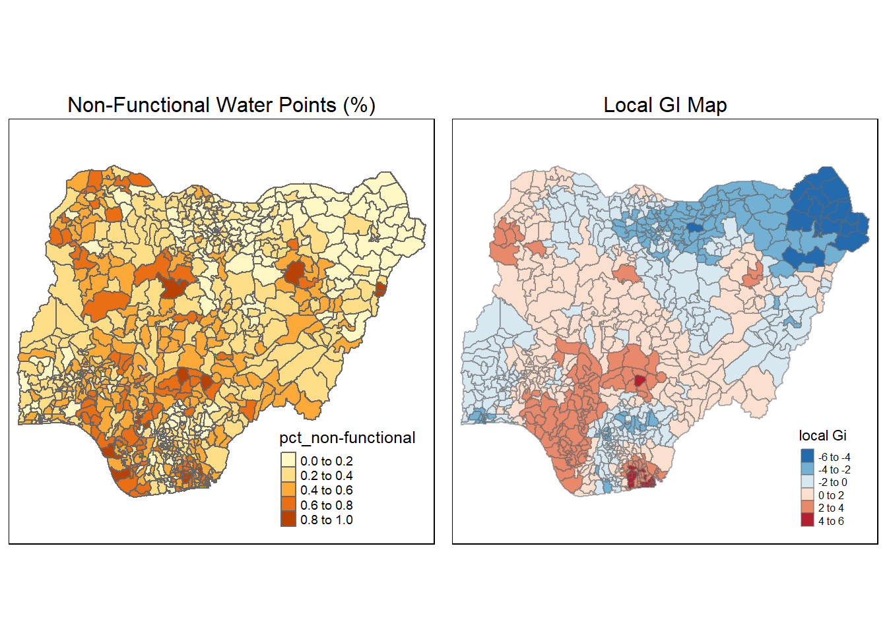

pacman::p_load(spdep,tidyverse,tmap,sf,funModeling,rgeoda)Take Home Exercise 1
Overview
Water is an important resource to mankind. Clean and accessible water is critical to human health. It provides a healthy environment, a sustainable economy, reduces poverty and ensures peace and security. Yet over 40% of the global population does not have access to sufficient clean water. By 2025, 1.8 billion people will be living in countries or regions with absolute water scarcity, according to UN-Water. The lack of water poses a major threat to several sectors, including food security. Agriculture uses about 70% of the world’s accessible freshwater.
Geospatial analytics hold tremendous potential to address complex problems facing society. In this study, we will apply appropriate global and local measures of spatial Association techniques to reveals the spatial patterns of non-functional water points. Nigeria will be the country of study for this assignment.
Getting Started
Firstly, we will install libraries below for data wrangling and geospatial analysis purposes.
Importing Geospatial Data
To import a shapefile object, st_read() function of sf package can be used as shown in the code chunk below.
nigeria_1 <- st_read(dsn = "geospatial",
layer = "geoBoundaries-NGA-ADM2",
crs = 4326)Reading layer `geoBoundaries-NGA-ADM2' from data source
`C:\Soe Htet\ISSS624\Take Home Exercise\Take Home Exercise 1\Geospatial'
using driver `ESRI Shapefile'
Simple feature collection with 774 features and 5 fields
Geometry type: MULTIPOLYGON
Dimension: XY
Bounding box: xmin: 2.668534 ymin: 4.273007 xmax: 14.67882 ymax: 13.89442
Geodetic CRS: WGS 84nigeria_1Simple feature collection with 774 features and 5 fields
Geometry type: MULTIPOLYGON
Dimension: XY
Bounding box: xmin: 2.668534 ymin: 4.273007 xmax: 14.67882 ymax: 13.89442
Geodetic CRS: WGS 84
First 10 features:
shapeName Level shapeID shapeGroup shapeType
1 Aba North ADM2 NGA-ADM2-72505758B79815894 NGA ADM2
2 Aba South ADM2 NGA-ADM2-72505758B67905963 NGA ADM2
3 Abadam ADM2 NGA-ADM2-72505758B57073987 NGA ADM2
4 Abaji ADM2 NGA-ADM2-72505758B61968000 NGA ADM2
5 Abak ADM2 NGA-ADM2-72505758B39432389 NGA ADM2
6 Abakaliki ADM2 NGA-ADM2-72505758B36739173 NGA ADM2
7 Abeokuta North ADM2 NGA-ADM2-72505758B86358915 NGA ADM2
8 Abeokuta South ADM2 NGA-ADM2-72505758B56925175 NGA ADM2
9 Abi ADM2 NGA-ADM2-72505758B1616690 NGA ADM2
10 Aboh-Mbaise ADM2 NGA-ADM2-72505758B78555816 NGA ADM2
geometry
1 MULTIPOLYGON (((7.401109 5....
2 MULTIPOLYGON (((7.334479 5....
3 MULTIPOLYGON (((13.83477 13...
4 MULTIPOLYGON (((7.045872 9....
5 MULTIPOLYGON (((7.811244 5....
6 MULTIPOLYGON (((8.4109 6.28...
7 MULTIPOLYGON (((3.143903 7....
8 MULTIPOLYGON (((3.301615 7....
9 MULTIPOLYGON (((8.153282 5....
10 MULTIPOLYGON (((7.321909 5....The imported file has WGS 84 coordinate system,774 rows and five columns including multipolygon geometry coordinates.
Shapename column of sf object will be analyzed to check if there are any duplicates.
duplicates <-nigeria_1[duplicated(nigeria_1$shapeName), ]
duplicatesSimple feature collection with 6 features and 5 fields
Geometry type: MULTIPOLYGON
Dimension: XY
Bounding box: xmin: 4.249275 ymin: 7.806164 xmax: 9.020704 ymax: 10.39507
Geodetic CRS: WGS 84
shapeName Level shapeID shapeGroup shapeType
95 Bassa ADM2 NGA-ADM2-72505758B52690633 NGA ADM2
305 Ifelodun ADM2 NGA-ADM2-72505758B18326272 NGA ADM2
356 Irepodun ADM2 NGA-ADM2-72505758B79178637 NGA ADM2
520 Nasarawa ADM2 NGA-ADM2-72505758B67188591 NGA ADM2
547 Obi ADM2 NGA-ADM2-72505758B3073896 NGA ADM2
694 Surulere ADM2 NGA-ADM2-72505758B31597260 NGA ADM2
geometry
95 MULTIPOLYGON (((8.823522 10...
305 MULTIPOLYGON (((4.721977 7....
356 MULTIPOLYGON (((4.543349 7....
520 MULTIPOLYGON (((7.493228 8....
547 MULTIPOLYGON (((9.008576 8....
694 MULTIPOLYGON (((4.375293 8....The above summary reveals that 6 secondary administrative appear more than once in the data. However, upon further checking, geometries of duplicate shape names are found to be different. Thus, it will not be deleted to prevent loss of information.
Nevertheless, as duplicated shape names can pose problems in subsequent analysis, we will rename the names as below.
nigeria_1[95,"shapeName"] <- "Bassa1"
nigeria_1[305,"shapeName"] <- "Ifelodun1"
nigeria_1[356,"shapeName"] <- "Irepodun1"
nigeria_1[520,"shapeName"] <- "Nasarawa1"
nigeria_1[547,"shapeName"] <- "Obi1"
nigeria_1[694,"shapeName"] <- "Surulere1"Now, another check is done to ensure there is no more duplicate.
duplicates <-nigeria_1[duplicated(nigeria_1$shapeName), ]
duplicatesSimple feature collection with 0 features and 5 fields
Bounding box: xmin: NA ymin: NA xmax: NA ymax: NA
Geodetic CRS: WGS 84
[1] shapeName Level shapeID shapeGroup shapeType geometry
<0 rows> (or 0-length row.names)Importing Attribute Data
To import csv fiile, read.csv() function can be utilized. The data has been cleaned beforehand to filter the country to include Nigeria only. Otherwise, filter() function of dplyr can be used to exclude all the other countries.
nigeria_2 <- read.csv("Nigeria_Att.csv")Tibble dataframe is transformed to sf data table in code chunk below.
nigeria_2 <- st_as_sf(nigeria_2,
coords = c("lon_deg", "lat_deg"),
crs=4326) The column we are interested in “status_clean” is found to contain blank values. They will be replace with text “unknown” as seen in the code chunk below.
nigeria_2$status_clean[nigeria_2$status_clean==""] = "Unknown"EDA
In the code chunk below, freq() of funModeling package is used to display the distribution of status_clean field in attribute data set nigeria_2.
freq(data=nigeria_2,
input = 'status_clean')Warning: `guides(<scale> = FALSE)` is deprecated. Please use `guides(<scale> =
"none")` instead.
status_clean frequency percentage cumulative_perc
1 Functional 45883 48.29 48.29
2 Non-Functional 29385 30.93 79.22
3 Unknown 10656 11.22 90.44
4 Functional but needs repair 4579 4.82 95.26
5 Non-Functional due to dry season 2403 2.53 97.79
6 Functional but not in use 1686 1.77 99.56
7 Abandoned/Decommissioned 234 0.25 99.81
8 Abandoned 175 0.18 99.99
9 Non functional due to dry season 7 0.01 100.00Extracting Water Point Data
In this section, we will learn how to classify functional and non-functional water points in attribute data.
Extracting Functional Water Points
Dplyr’s function filter() is used to classify functional water points and proportion is plotted after filtering.
functional <- nigeria_2 %>%
filter(status_clean %in% c("Functional",
"Functional but needs repair",
"Functional but not in use"))
freq(data=functional,
input = 'status_clean')Warning: `guides(<scale> = FALSE)` is deprecated. Please use `guides(<scale> =
"none")` instead.
status_clean frequency percentage cumulative_perc
1 Functional 45883 87.99 87.99
2 Functional but needs repair 4579 8.78 96.77
3 Functional but not in use 1686 3.23 100.00Extracting Non-functional Water Points
Likewise, non-functional water points are extracted by using the following texts in status_clean field.
Non_functional <- nigeria_2 %>%
filter(status_clean %in% c("Non-Functional",
"Non-Functional due to dry season",
"Non functional but not in use",
"Abandoned/Decommissioned",
"Abandoned"))
freq(data=Non_functional,
input = 'status_clean')Warning: `guides(<scale> = FALSE)` is deprecated. Please use `guides(<scale> =
"none")` instead. status_clean frequency percentage cumulative_perc
1 Non-Functional 29385 91.27 91.27
2 Non-Functional due to dry season 2403 7.46 98.73
3 Abandoned/Decommissioned 234 0.73 99.46
4 Abandoned 175 0.54 100.00Extracting Unknown Status Water Point
Lastly, the following code chunk is used to extract unknown status.
Unknown <- nigeria_2 %>%
filter(status_clean == "Unknown")Performing Point In Polygon Count
The following code chunk is used to calculate how many total, functional, non-functional and unknown water points are present in each polygon.
nigeria_1 <- nigeria_1 %>%
mutate(`total_wpt` = lengths(
st_intersects(nigeria_1, nigeria_2))) %>%
mutate(`wpt_functional` = lengths(
st_intersects(nigeria_1, functional))) %>%
mutate(`wpt_non-functional` = lengths(
st_intersects(nigeria_1, Non_functional))) %>%
mutate(`wpt_unknown` = lengths(
st_intersects(nigeria_1, Unknown)))Saving Analytical Data
Afterwards, percentage of functional and non-functional water points in each polygon are computed by dividing with total water points.
nigeria_1 <- nigeria_1 %>%
mutate(pct_functional = `wpt_functional`/`total_wpt`) %>%
mutate(`pct_non-functional` = `wpt_non-functional`/`total_wpt`) Things to learn from the code chunk above:
mutate()of dplyr package is used to derive two fields namely pct_functional and pct_non-functional
write_rds(nigeria_1, "nigeria_1.rds")Visualizing Spatial Distribution of Water Points
nigeria_1 <- read_rds("nigeria_1.rds")
total <- qtm(nigeria_1, "total_wpt")+
tm_layout(legend.height=0.35,
legend.width=0.45)
wp_functional <- qtm(nigeria_1, "wpt_functional")+
tm_layout(legend.height=0.35,
legend.width=0.45)
wp_nonfunctional <- qtm(nigeria_1, "wpt_non-functional")+
tm_layout(legend.height=0.35,
legend.width=0.45)
unknown <- qtm(nigeria_1, "wpt_unknown")+
tm_layout(legend.height=0.35,
legend.width=0.45)
tmap_arrange(total, wp_functional, wp_nonfunctional, unknown,asp=0, ncol=2)
Visualizing Spatial Distribution of Water Points %
pct_functional <- qtm(nigeria_1, "pct_functional")+
tm_layout(legend.height=0.25,
legend.width=0.35)
pct_non <- qtm(nigeria_1,"pct_non-functional")+
tm_layout(legend.height=0.25,
legend.width=0.35)
tmap_arrange(pct_functional,pct_non,asp=1, ncol=2)Interestingly, after plotting the above, it can be observed that there are missing values for percentage attributes.
It will be further analyzed in detail in the code chunk below.
nigeria_1[is.nan(nigeria_1$`pct_non-functional`) ,]Simple feature collection with 13 features and 11 fields
Geometry type: MULTIPOLYGON
Dimension: XY
Bounding box: xmin: 8.553504 ymin: 4.798471 xmax: 14.67882 ymax: 13.71406
Geodetic CRS: WGS 84
First 10 features:
shapeName Level shapeID shapeGroup shapeType
3 Abadam ADM2 NGA-ADM2-72505758B57073987 NGA ADM2
86 Bakassi ADM2 NGA-ADM2-72505758B25708171 NGA ADM2
241 Geidam ADM2 NGA-ADM2-72505758B79155077 NGA ADM2
250 Gubio ADM2 NGA-ADM2-72505758B10682130 NGA ADM2
252 Gujba ADM2 NGA-ADM2-72505758B96685701 NGA ADM2
261 Guzamala ADM2 NGA-ADM2-72505758B23727233 NGA ADM2
400 Kaga ADM2 NGA-ADM2-72505758B72996990 NGA ADM2
406 Kala/Balge ADM2 NGA-ADM2-72505758B70998471 NGA ADM2
447 Kukawa ADM2 NGA-ADM2-72505758B5578796 NGA ADM2
473 Madagali ADM2 NGA-ADM2-72505758B2628120 NGA ADM2
geometry total_wpt wpt_functional wpt_non-functional
3 MULTIPOLYGON (((13.83477 13... 0 0 0
86 MULTIPOLYGON (((8.580903 4.... 0 0 0
241 MULTIPOLYGON (((11.7352 12.... 0 0 0
250 MULTIPOLYGON (((12.4339 12.... 0 0 0
252 MULTIPOLYGON (((12.14603 11... 0 0 0
261 MULTIPOLYGON (((13.12014 13... 0 0 0
400 MULTIPOLYGON (((12.17825 11... 0 0 0
406 MULTIPOLYGON (((14.58302 11... 0 0 0
447 MULTIPOLYGON (((13.28982 13... 0 0 0
473 MULTIPOLYGON (((13.32295 10... 0 0 0
wpt_unknown pct_functional pct_non-functional
3 0 NaN NaN
86 0 NaN NaN
241 0 NaN NaN
250 0 NaN NaN
252 0 NaN NaN
261 0 NaN NaN
400 0 NaN NaN
406 0 NaN NaN
447 0 NaN NaN
473 0 NaN NaNThings to note from result above:
There are 13 rows that has no water point in their corresponding polygons, therefore giving rise to NaN values in percentage fields.
NaN values in pct_non-functional field will be recoded as 0 in the code chunk below for easier analysis.
nigeria_1["pct_non-functional"][is.na(nigeria_1["pct_non-functional"])] <- 0Warning in `[<-.data.frame`(`*tmp*`, "pct_non-functional", value =
structure(list(: provided 2 variables to replace 1 variablesComputation of Spatial Weight Matrix
Weight matrix can be computed in various methods. Firstly, queen contiguity based weight is computed below.
wm <- poly2nb(nigeria_1,
queen=TRUE)
wmNeighbour list object:
Number of regions: 774
Number of nonzero links: 4440
Percentage nonzero weights: 0.7411414
Average number of links: 5.736434
1 region with no links:
86In above summary, it is observed that there is a region with no neighbor when using contiguity method. Furthermore, there is a wide range of polygon sizes across Nigeria map. Hence, fixed distance or adaptive distance weights are more suitable choices for this analysis.
To use distanced based weight matrix, we need to transform coordinate system to projected coordinate system by using st_transform() and setting crs as 26391 for nigeria. Afterwards, we will compute coordinates of polygons’ centroids.
nigeria <- st_transform(nigeria_1,crs=26391)
nigeriaSimple feature collection with 774 features and 11 fields
Geometry type: MULTIPOLYGON
Dimension: XY
Bounding box: xmin: 28879.72 ymin: 30292.37 xmax: 1343798 ymax: 1094244
Projected CRS: Minna / Nigeria West Belt
First 10 features:
shapeName Level shapeID shapeGroup shapeType
1 Aba North ADM2 NGA-ADM2-72505758B79815894 NGA ADM2
2 Aba South ADM2 NGA-ADM2-72505758B67905963 NGA ADM2
3 Abadam ADM2 NGA-ADM2-72505758B57073987 NGA ADM2
4 Abaji ADM2 NGA-ADM2-72505758B61968000 NGA ADM2
5 Abak ADM2 NGA-ADM2-72505758B39432389 NGA ADM2
6 Abakaliki ADM2 NGA-ADM2-72505758B36739173 NGA ADM2
7 Abeokuta North ADM2 NGA-ADM2-72505758B86358915 NGA ADM2
8 Abeokuta South ADM2 NGA-ADM2-72505758B56925175 NGA ADM2
9 Abi ADM2 NGA-ADM2-72505758B1616690 NGA ADM2
10 Aboh-Mbaise ADM2 NGA-ADM2-72505758B78555816 NGA ADM2
geometry total_wpt wpt_functional wpt_non-functional
1 MULTIPOLYGON (((552560.3 12... 17 7 9
2 MULTIPOLYGON (((545153.6 12... 71 29 35
3 MULTIPOLYGON (((1245549 106... 0 0 0
4 MULTIPOLYGON (((510602.3 57... 57 23 34
5 MULTIPOLYGON (((598086 1218... 48 23 25
6 MULTIPOLYGON (((663801.7 25... 233 82 42
7 MULTIPOLYGON (((81132.88 37... 34 16 15
8 MULTIPOLYGON (((98464.54 34... 119 72 33
9 MULTIPOLYGON (((635478 2187... 152 79 62
10 MULTIPOLYGON (((543608.8 15... 66 18 26
wpt_unknown pct_functional pct_non-functional
1 1 0.4117647 0.5294118
2 7 0.4084507 0.4929577
3 0 NaN 0.0000000
4 0 0.4035088 0.5964912
5 0 0.4791667 0.5208333
6 109 0.3519313 0.1802575
7 3 0.4705882 0.4411765
8 14 0.6050420 0.2773109
9 11 0.5197368 0.4078947
10 22 0.2727273 0.3939394longitude <- map_dbl(nigeria$geometry, ~st_centroid(.x)[[1]])
latitude <- map_dbl(nigeria$geometry, ~st_centroid(.x)[[2]])
coords <- cbind(longitude, latitude)
head(coords) longitude latitude
[1,] 549364.0 123694.9
[2,] 547123.4 120376.5
[3,] 1189496.9 1059770.9
[4,] 489057.4 534262.6
[5,] 593718.2 113824.1
[6,] 642618.7 251222.3The following code chunk is used to determine the maximum distance of nearest neighbors.
k1 <- knn2nb(knearneigh(coords))
k1dists <- unlist(nbdists(k1, coords))
summary(k1dists) Min. 1st Qu. Median Mean 3rd Qu. Max.
2669 12834 20304 22084 27783 72139 To ensure each polygon has at least one neighbor, upper limit distance is set at 72200 which is slightly higher than maximum distance.
wm_fixed <- dnearneigh(coords, 0, 72200)
summary(wm_fixed)Neighbour list object:
Number of regions: 774
Number of nonzero links: 18158
Percentage nonzero weights: 3.031001
Average number of links: 23.45995
Link number distribution:
1 2 3 4 5 6 7 8 9 10 11 12 13 14 15 16 17 18 19 20 21 22 23 24 25 26
5 9 11 22 31 35 33 35 29 35 27 18 20 24 15 13 11 12 14 18 17 10 12 11 4 15
27 28 29 30 31 32 33 34 35 36 37 38 39 40 41 42 43 44 45 46 47 48 49 50 51 52
12 5 14 14 12 7 10 8 11 6 12 16 15 9 8 6 4 4 6 7 10 9 4 6 4 2
53 54 55 56 57 58 59 60 61 62 63 64 65 67 68 70
2 4 5 4 5 6 2 4 6 7 7 5 5 3 1 1
5 least connected regions:
90 112 123 237 670 with 1 link
1 most connected region:
585 with 70 linksPlot of fixed distance based neighbors is displayed below.
plot(nigeria$geometry, border="lightgrey")
plot(wm_fixed, coords, add=TRUE)
plot(k1, coords, add=TRUE, col="red", length=0.08)One of the characteristics of fixed distance weight matrix is that more densely settled areas (usually the urban areas) tend to have more neighbors and the less densely settled areas (usually the rural counties) tend to have lesser neighbors. Having many neighbors smoothes the neighbor relationship across more neighbors.
To control the number of neighbors, k=number of neighbors can be passed when creating list object as shown below.
knn8 <- knn2nb(knearneigh(coords, k=8))
knn8Neighbour list object:
Number of regions: 774
Number of nonzero links: 6192
Percentage nonzero weights: 1.033592
Average number of links: 8
Non-symmetric neighbours listPlot of 8 k-nearest neighbors weight matrix is displayed below.
plot(nigeria$geometry, border="lightgrey")
plot(knn8, coords, pch = 19, cex = 0.6, add = TRUE, col = "red")Next, we need to assign weights to each neighboring polygon. In our case, each neighboring polygon will be assigned equal weight (style=“W”). This is accomplished by assigning the fraction 1/(#ofneighbors) to each neighboring county then summing the weighted income values. While this is the most intuitive way to summaries the neighbors’ values it has one drawback in that polygons along the edges of the study area will base their lagged values on fewer polygons thus potentially over- or under-estimating the true nature of the spatial autocorrelation in the data. For this example, we’ll stick with the style=“W” option for simplicity’s sake but note that other more robust options are available, notably style=“B”.
rswm <- nb2listw(knn8,
style="W",zero.policy=TRUE)Global Spatial Autocorrelation
Global Spatial Autocorrelation : Moran’s I
Global Moran’s I is a statistical test that indicates spatial and attribute similarity. Under randomization, Moran’s I value is approximately zero. Therefore, positive Moran’s I value is interpreted as attribute similarity pattern (positive spatial autocorrelation) across the map while negative Moran’s I value shows checker board pattern (alternate low and high) across the map.
moran.test(nigeria$`pct_non-functional`,
listw=rswm,
zero.policy = TRUE,
na.action=na.omit)
Moran I test under randomisation
data: nigeria$`pct_non-functional`
weights: rswm
Moran I statistic standard deviate = 27.279, p-value < 2.2e-16
alternative hypothesis: greater
sample estimates:
Moran I statistic Expectation Variance
0.4613397182 -0.0012936611 0.0002876103 set.seed(1234)
bperm= moran.mc(nigeria$`pct_non-functional`,
listw=rswm,
nsim=999,
zero.policy = TRUE,
na.action=na.omit)
bperm
Monte-Carlo simulation of Moran I
data: nigeria$`pct_non-functional`
weights: rswm
number of simulations + 1: 1000
statistic = 0.46134, observed rank = 1000, p-value = 0.001
alternative hypothesis: greaterGlobal Spatial Autocorrelation : Geary’s C
Geary’s C computation is different from Moran’s I in such a way that Geary’s C value that is bigger than expected value (1 under randomization) indicates dissimilarity whereas the value below 1 indicates similarity with its neighbors.
geary.test(nigeria$`pct_non-functional`, listw=rswm,zero.policy=TRUE)
Geary C test under randomisation
data: nigeria$`pct_non-functional`
weights: rswm
Geary C statistic standard deviate = 26.276, p-value < 2.2e-16
alternative hypothesis: Expectation greater than statistic
sample estimates:
Geary C statistic Expectation Variance
0.5259474612 1.0000000000 0.0003254806 As seen from the geary’s C test, the statistic also indicate positive autocorrelation on a global scale.
Cluster and Outlier Analysis
Local Indicators of Spatial Association or LISA are statistics that evaluate the existence of clusters in the spatial arrangement of a given variable. Local Moran’s I is one of the most popular method to use to explore existence of clusters on a local scale. Local’s Moran I value of each polygon is interpreted by checking whether it is a positive value or a negative value. Positive local moran’s value of a polygon indicates formation of cluster (high-high or low-low for itself and its neighbors). Negative value ,on the other hand, indicates outliers meaning that the attribute values of the polygon and its neighbors exist on either side of mean value.
Local moran’s I can be computed by using the code chunk below.
fips <- order(nigeria$shapeName)
localMI <- localmoran(nigeria$`pct_non-functional`, rswm,zero.policy=TRUE)
head(localMI) Ii E.Ii Var.Ii Z.Ii Pr(z != E(Ii))
1 0.6789154 -0.0008519201 0.08160633 2.3795692 1.733289e-02
2 0.6234672 -0.0005263197 0.05043315 2.7785743 5.459802e-03
3 2.9257200 -0.0037848901 0.36149434 4.8724061 1.102472e-06
4 0.2186541 -0.0016549463 0.15840164 0.5535444 5.798907e-01
5 0.8962642 -0.0007682791 0.07360042 3.3064962 9.447063e-04
6 0.5740935 -0.0009385788 0.08989966 1.9178431 5.513091e-02Shape name will be displayed alongside local Moran’s statistics by using the code below.
printCoefmat(data.frame(
localMI[fips,],
row.names=nigeria$shapeName[fips]),
check.names=FALSE,
) Ii E.Ii Var.Ii Z.Ii
Aba North 6.7892e-01 -8.5192e-04 8.1606e-02 2.3796e+00
Aba South 6.2347e-01 -5.2632e-04 5.0433e-02 2.7786e+00
Abadam 2.9257e+00 -3.7849e-03 3.6149e-01 4.8724e+00
Abaji 2.1865e-01 -1.6549e-03 1.5840e-01 5.5354e-01
Abak 8.9626e-01 -7.6828e-04 7.3600e-02 3.3065e+00
Abakaliki 5.7409e-01 -9.3858e-04 8.9900e-02 1.9178e+00
Abeokuta North -1.6022e-01 -1.9795e-04 1.8974e-02 -1.1617e+00
Abeokuta South 1.3874e-01 -1.9620e-04 1.8807e-02 1.0132e+00
Abi -3.5169e-02 -7.0007e-05 6.7113e-03 -4.2844e-01
Aboh-Mbaise 1.0170e-02 -3.5711e-05 3.4236e-03 1.7441e-01
Abua/Odual -5.8581e-03 -1.9433e-05 1.8631e-03 -1.3527e-01
Abuja Municipal -9.0394e-03 -9.6900e-04 9.2811e-02 -2.6491e-02
Adavi 8.7425e-01 -1.1335e-03 1.0855e-01 2.6570e+00
Ado 6.5003e-02 -1.7775e-04 1.7038e-02 4.9935e-01
Ado-Odo/Ota -2.1226e-01 -1.0738e-04 1.0294e-02 -2.0911e+00
Ado Ekiti -5.6126e-02 -1.5598e-04 1.4952e-02 -4.5773e-01
Afijio 2.3711e-02 -2.9388e-06 2.8175e-04 1.4128e+00
Afikpo North -3.3345e-03 -8.8537e-05 8.4875e-03 -3.5234e-02
Afikpo South -1.7193e-01 -5.8314e-04 5.5875e-02 -7.2488e-01
Agaie -3.5249e-02 -5.3950e-04 5.1695e-02 -1.5266e-01
Agatu 1.9326e+00 -2.7778e-03 2.6558e-01 3.7555e+00
Agege 1.4231e+00 -2.5099e-03 2.4003e-01 2.9098e+00
Aguata 5.9881e-01 -1.1880e-03 1.1376e-01 1.7789e+00
Agwara 1.6703e-01 -9.4938e-05 9.1011e-03 1.7519e+00
Ahiazu-Mbaise 7.2846e-02 -1.3417e-04 1.2862e-02 6.4351e-01
Ahoada East -5.6799e-01 -8.2124e-04 7.8669e-02 -2.0221e+00
Ahoada West -3.0991e-01 -3.7849e-03 3.6149e-01 -5.0915e-01
Aiyedade 5.3356e-02 -3.6665e-05 3.5151e-03 9.0057e-01
Aiyedire 5.0529e-02 -3.2647e-05 3.1298e-03 9.0378e-01
Aiyekire (Gbonyin) 9.2862e-03 -3.0691e-06 2.9424e-04 5.4154e-01
Ajaokuta 1.2351e+00 -1.7042e-03 1.6311e-01 3.0623e+00
Ajeromi-Ifelodun 1.2341e+00 -1.6083e-03 1.5395e-01 3.1493e+00
Ajingi 8.1249e-01 -9.0827e-04 8.6999e-02 2.7577e+00
Akamkpa 4.8317e-02 -8.4227e-06 8.0750e-04 1.7006e+00
Akinyele 3.4776e-02 -9.8096e-06 9.4047e-04 1.1343e+00
Akko 5.0465e-01 -1.3648e-03 1.3067e-01 1.3998e+00
Akoko-Edo 6.9639e-01 -8.8063e-04 8.4354e-02 2.4008e+00
Akoko North East 3.0564e-01 -8.4416e-04 8.0864e-02 1.0778e+00
Akoko North West 2.7762e-01 -1.6170e-03 1.5477e-01 7.0980e-01
Akoko South East 6.0714e-01 -3.0142e-03 2.8811e-01 1.1367e+00
Akoko South West 7.1432e-02 -1.0000e-03 9.5777e-02 2.3404e-01
Akpabuyo 6.8192e-01 -8.3136e-04 7.9639e-02 2.4194e+00
Akuku Toru 1.0173e-01 -1.5794e-04 1.5140e-02 8.2806e-01
Akure North 1.1739e-01 -1.3622e-03 1.3042e-01 3.2884e-01
Akure South -7.6626e-01 -1.4958e-03 1.4320e-01 -2.0210e+00
Akwanga -1.2842e-01 -4.2396e-04 4.0629e-02 -6.3499e-01
Albasu 2.7858e-01 -9.7711e-05 9.3669e-03 2.8794e+00
Aleiro 1.7576e-01 -1.4184e-04 1.3597e-02 1.5085e+00
Alimosho 7.0298e-01 -5.2520e-04 5.0326e-02 3.1360e+00
Alkaleri -1.1207e-01 -1.3334e-04 1.2782e-02 -9.9010e-01
Amuwo-Odofin 8.0321e-01 -7.4276e-04 7.1157e-02 3.0138e+00
Anambra East 4.1552e-01 -4.7483e-04 4.5502e-02 1.9502e+00
Anambra West 3.8053e-02 -5.7475e-05 5.5100e-03 5.1341e-01
Anaocha 6.8839e-01 -8.2150e-04 7.8695e-02 2.4568e+00
Andoni 4.7375e-01 -2.4350e-03 2.3288e-01 9.8676e-01
Aninri 6.3469e-01 -3.7849e-03 3.6149e-01 1.0619e+00
Aniocha North 9.0257e-01 -6.6034e-03 6.2891e-01 1.1464e+00
Aniocha South 1.8668e-02 -7.7469e-05 7.4265e-03 2.1753e-01
Anka 6.8828e-02 -4.1616e-04 3.9882e-02 3.4674e-01
Ankpa 2.3264e+00 -4.7018e-03 4.4865e-01 3.4802e+00
Apa 1.8920e+00 -1.9288e-03 1.8456e-01 4.4086e+00
Apapa 1.7658e+00 -3.7849e-03 3.6149e-01 2.9432e+00
Ardo-Kola 7.1375e-03 -6.2839e-05 6.0242e-03 9.2769e-02
Arewa-Dandi 2.1309e-03 -2.5840e-08 2.4774e-06 1.3539e+00
Argungu 1.2887e-01 -3.0829e-04 2.9548e-02 7.5147e-01
Arochukwu -2.3009e-01 -1.8351e-04 1.7590e-02 -1.7335e+00
Asa -6.4502e-02 -9.2871e-05 8.9030e-03 -6.8263e-01
Asari-Toru 6.6861e-01 -1.2962e-03 1.2411e-01 1.9016e+00
Askira/Uba -9.4916e-02 -7.9555e-04 7.6211e-02 -3.4094e-01
Atakumosa East 1.4934e-01 -8.4010e-05 8.0536e-03 1.6650e+00
Atakumosa West 6.9263e-02 -1.0441e-04 1.0009e-02 6.9335e-01
Atiba 1.5140e-01 -2.9435e-04 2.8212e-02 9.0315e-01
Atigbo -1.8658e-01 -2.7222e-04 2.6092e-02 -1.1534e+00
Augie 1.8536e-01 -2.3097e-04 2.2139e-02 1.2474e+00
Auyo 1.3216e+00 -1.9593e-03 1.8748e-01 3.0568e+00
Awe 1.0495e-01 -1.4818e-04 1.4204e-02 8.8181e-01
Awgu 1.6390e-01 -7.7469e-05 7.4265e-03 1.9027e+00
Awka North 3.3665e-01 -3.7849e-03 3.6149e-01 5.6621e-01
Awka South 3.6091e-01 -5.2762e-04 5.0558e-02 1.6074e+00
Ayamelum -3.4206e-01 -1.3785e-03 1.3198e-01 -9.3777e-01
Babura 7.4368e-01 -1.1769e-03 1.1270e-01 2.2187e+00
Badagry -3.7187e-01 -4.3617e-04 4.1799e-02 -1.8168e+00
Bade 8.2284e-01 -7.7865e-04 7.4593e-02 3.0156e+00
Bagudo -1.6464e-01 -2.4629e-05 2.3612e-03 -3.3877e+00
Bagwai 8.5997e-01 -1.0336e-03 9.8988e-02 2.7366e+00
Bakassi -1.9921e+00 -3.7849e-03 3.6149e-01 -3.3070e+00
Bakori 4.9255e-01 -2.2358e-03 2.1387e-01 1.0699e+00
Bakura 1.0044e-01 -2.1293e-03 2.0371e-01 2.2726e-01
Balanga -1.6459e-01 -1.9956e-04 1.9128e-02 -1.1886e+00
Bali 8.0925e-03 -1.1908e-04 1.1415e-02 7.6858e-02
Bama 2.6778e+00 -3.7849e-03 3.6149e-01 4.4600e+00
Barikin Ladi 1.1400e-02 -3.3171e-06 3.1802e-04 6.3942e-01
Baruten 3.8950e-02 -1.4682e-04 1.4074e-02 3.2956e-01
Bassa 1.4629e+00 -1.5293e-03 1.4640e-01 3.8274e+00
Bassa1 1.2614e-01 -3.4119e-04 3.2700e-02 6.9943e-01
Batagarawa -1.4586e-02 -2.6866e-05 2.5756e-03 -2.8688e-01
Batsari 3.7215e-02 -3.4060e-05 3.2654e-03 6.5186e-01
Bauchi 4.7263e-01 -6.8373e-04 6.5506e-02 1.8493e+00
Baure -9.3729e-02 -2.3253e-05 2.2292e-03 -1.9847e+00
Bayo -5.0392e-02 -1.3334e-04 1.2782e-02 -4.4454e-01
Bebeji 8.0730e-01 -1.8246e-03 1.7461e-01 1.9363e+00
Bekwara -2.4575e-02 -1.4491e-04 1.3891e-02 -2.0728e-01
Bende -2.3029e-02 -3.4919e-04 3.3466e-02 -1.2397e-01
Biase 2.0709e-01 -2.0560e-04 1.9707e-02 1.4766e+00
Bichi 2.6289e-01 -7.7469e-05 7.4265e-03 3.0515e+00
Bida -3.1094e-01 -1.6155e-03 1.5463e-01 -7.8662e-01
Billiri 1.0781e-01 -9.0246e-04 8.6443e-02 3.6977e-01
Bindawa 3.3102e-01 -7.8469e-04 7.5171e-02 1.2102e+00
Binji 3.5427e-01 -2.1370e-03 2.0445e-01 7.8823e-01
Biriniwa 9.0755e-01 -1.0626e-03 1.0176e-01 2.8483e+00
Birni Kudu 1.0370e+00 -1.8664e-03 1.7861e-01 2.4583e+00
Birnin-Gwari 6.6308e-01 -3.4244e-03 3.2719e-01 1.1652e+00
Birnin Kebbi -7.1690e-01 -1.4958e-03 1.4320e-01 -1.8905e+00
Birnin Magaji 4.0771e-01 -5.9670e-04 5.7173e-02 1.7076e+00
Biu 1.4693e+00 -3.7849e-03 3.6149e-01 2.4501e+00
Bodinga -3.7581e-02 -4.2649e-04 4.0871e-02 -1.8378e-01
Bogoro 4.6669e-01 -6.5513e-04 6.2768e-02 1.8654e+00
Boki -9.3332e-04 -6.7819e-08 6.5020e-06 -3.6600e-01
Bokkos -2.0073e-02 -3.4919e-04 3.3466e-02 -1.0782e-01
Boluwaduro 7.6330e-02 -3.8656e-05 3.7059e-03 1.2545e+00
Bomadi 2.0653e+00 -4.4867e-03 4.2823e-01 3.1629e+00
Bonny 3.0883e-01 -3.7849e-03 3.6149e-01 5.1995e-01
Borgu -4.0164e-01 -4.7784e-04 4.5790e-02 -1.8747e+00
Boripe 2.2016e-01 -4.3099e-04 4.1302e-02 1.0854e+00
Bosso -1.4550e-02 -5.8379e-04 5.5937e-02 -5.9052e-02
Brass 9.8065e-01 -3.9802e-03 3.8008e-01 1.5971e+00
Buji 1.0148e+00 -1.6136e-03 1.5445e-01 2.5864e+00
Bukkuyum 3.8494e-02 -1.9397e-04 1.8592e-02 2.8373e-01
Bungudu 9.6500e-02 -5.8858e-05 5.6426e-03 1.2854e+00
Bunkure 3.9302e-01 -4.4300e-04 4.2453e-02 1.9096e+00
Bunza 7.6036e-01 -1.3904e-03 1.3311e-01 2.0878e+00
Bursari 9.0091e-01 -8.8367e-04 8.4645e-02 3.0996e+00
Buruku -8.4263e-03 -4.3890e-05 4.2076e-03 -1.2923e-01
Burutu 4.4268e-01 -1.4184e-04 1.3597e-02 3.7976e+00
Bwari 2.8730e-02 -5.1512e-04 4.9360e-02 1.3163e-01
Calabar-Municipal -1.8069e-01 -5.1758e-05 4.9619e-03 -2.5644e+00
Calabar South 1.0993e+00 -2.6153e-03 2.5008e-01 2.2034e+00
Chanchaga -7.5975e-03 -1.1335e-03 1.0855e-01 -1.9620e-02
Charanchi 2.5287e-01 -3.5736e-04 3.4249e-02 1.3683e+00
Chibok 5.8966e-01 -3.9938e-04 3.8275e-02 3.0161e+00
Chikun 1.0710e+00 -1.2060e-02 1.1423e+00 1.0134e+00
Dala -1.0947e-01 -1.8343e-05 1.7585e-03 -2.6101e+00
Damaturu 1.5606e+00 -2.3369e-03 2.2352e-01 3.3058e+00
Damban -4.2715e-01 -2.0238e-03 1.9364e-01 -9.6610e-01
Dambatta 2.1897e-02 -5.6372e-07 5.4045e-05 2.9787e+00
Damboa 2.4501e+00 -3.7849e-03 3.6149e-01 4.0814e+00
Dan Musa 8.5758e-01 -1.8302e-03 1.7515e-01 2.0535e+00
Dandi 1.2838e+00 -3.4734e-03 3.3185e-01 2.2347e+00
Dandume 4.0985e-03 -6.4750e-06 6.2077e-04 1.6476e-01
Dange-Shuni -1.8104e-02 -2.7397e-05 2.6265e-03 -3.5272e-01
Danja -9.3987e-03 -2.1402e-04 2.0514e-02 -6.4126e-02
Darazo 1.4584e-01 -5.8314e-04 5.5875e-02 6.1943e-01
Dass 8.8954e-01 -2.3926e-03 2.2884e-01 1.8645e+00
Daura -1.7522e-01 -4.4265e-03 4.2251e-01 -2.6275e-01
Dawakin Kudu 1.3644e-01 -1.0740e-04 1.0295e-02 1.3458e+00
Dawakin Tofa 9.6148e-01 -2.6974e-03 2.5790e-01 1.8986e+00
Degema 5.8454e-01 -3.4919e-04 3.3466e-02 3.1972e+00
Dekina 1.7648e+00 -3.0748e-03 2.9388e-01 3.2610e+00
Demsa 3.2421e-01 -4.8319e-04 4.6302e-02 1.5089e+00
Dikwa 2.6778e+00 -3.7849e-03 3.6149e-01 4.4600e+00
Doguwa -1.3645e-01 -7.3478e-05 7.0441e-03 -1.6249e+00
Doma 1.3346e-01 -2.1883e-05 2.0979e-03 2.9144e+00
Donga 7.7152e-02 -2.3562e-04 2.2584e-02 5.1496e-01
Dukku 1.2516e+00 -7.1607e-03 6.8160e-01 1.5246e+00
Dunukofia 1.3329e-02 -3.6091e-07 3.4602e-05 2.2661e+00
Dutse 1.4633e+00 -3.5160e-03 3.3591e-01 2.5308e+00
Dutsi -1.2041e-02 -1.3649e-05 1.3085e-03 -3.3250e-01
Dutsin-Ma 5.5020e-01 -5.9391e-04 5.6906e-02 2.3089e+00
Eastern Obolo 2.3724e+00 -6.7904e-03 6.4659e-01 2.9588e+00
Ebonyi 7.2285e-01 -1.2363e-03 1.1838e-01 2.1045e+00
Edati 3.9363e-02 -2.2604e-04 2.1666e-02 2.6896e-01
Ede North -1.5542e-01 -4.7784e-04 4.5790e-02 -7.2406e-01
Ede South -4.2037e-02 -2.4815e-04 2.3785e-02 -2.7096e-01
Edu 1.0724e-01 -6.4958e-04 6.2237e-02 4.3247e-01
Efon 2.1532e-01 -6.7871e-04 6.5026e-02 8.4706e-01
Egbado North -7.2892e-02 -1.7295e-05 1.6580e-03 -1.7897e+00
Egbado South 2.9782e-01 -2.5819e-03 2.4690e-01 6.0456e-01
Egbeda 8.2926e-03 -2.1443e-06 2.0557e-04 5.7852e-01
Egbedore 4.2595e-02 -7.6016e-05 7.2873e-03 4.9986e-01
Egor 6.0463e-01 -7.5313e-04 7.2151e-02 2.2538e+00
Ehime-Mbano 2.6306e-01 -4.9843e-04 4.7762e-02 1.2060e+00
Ejigbo 6.2663e-02 -2.1410e-04 2.0522e-02 4.3892e-01
Ekeremor 2.1979e+00 -7.9298e-03 7.5423e-01 2.5400e+00
Eket 6.9441e-01 -2.7520e-04 2.6377e-02 4.2774e+00
Ekiti 4.3960e-01 -1.6902e-03 1.6177e-01 1.0972e+00
Ekiti East -7.0851e-01 -2.9059e-03 2.7779e-01 -1.3388e+00
Ekiti South West 2.1953e-01 -4.3996e-04 4.2162e-02 1.0713e+00
Ekiti West -3.1506e-03 -2.1887e-06 2.0984e-04 -2.1734e-01
Ekwusigo 1.3433e+00 -2.2319e-03 2.1350e-01 2.9119e+00
Eleme 5.0052e-01 -3.7849e-03 3.6149e-01 8.3877e-01
Emohua 6.3099e-02 -1.9433e-05 1.8631e-03 1.4623e+00
Emure -1.6629e-01 -1.9807e-04 1.8985e-02 -1.2054e+00
Enugu East 4.4662e-01 -1.0064e-03 9.6386e-02 1.4418e+00
Enugu North 1.0370e+00 -2.9574e-03 2.8270e-01 1.9560e+00
Enugu South 1.0774e+00 -2.7566e-03 2.6356e-01 2.1039e+00
Epe -1.1674e-01 -7.8063e-05 7.4835e-03 -1.3486e+00
Esan Central 1.4559e+00 -2.0762e-03 1.9864e-01 3.2713e+00
Esan North East 1.5349e+00 -1.5419e-03 1.4759e-01 3.9994e+00
Esan South East 1.7774e+00 -3.7044e-03 3.5384e-01 2.9943e+00
Esan West 9.0162e-01 -8.5192e-04 8.1606e-02 3.1592e+00
Ese-Odo 1.4237e+00 -2.3111e-03 2.2106e-01 3.0329e+00
Esit - Eket 2.7088e+00 -4.4867e-03 4.2823e-01 4.1463e+00
Essien Udim 2.3101e+00 -2.8826e-03 2.7556e-01 4.4062e+00
Etche 6.7156e-03 -3.8570e-04 3.6964e-02 3.6936e-02
Ethiope East 1.2709e+00 -2.2575e-03 2.1594e-01 2.7398e+00
Ethiope West 1.5819e+00 -3.0238e-03 2.8903e-01 2.9480e+00
Eti-Osa 1.7559e+00 -3.7849e-03 3.6149e-01 2.9268e+00
Etim Ekpo 2.2998e+00 -2.4350e-03 2.3288e-01 4.7707e+00
Etinan 2.5189e+00 -4.9921e-03 4.7622e-01 3.6573e+00
Etsako Central 1.2637e+00 -1.7637e-03 1.6879e-01 3.0801e+00
Etsako East 7.6136e-01 -1.0438e-03 9.9964e-02 2.4114e+00
Etsako West -1.3044e-01 -1.9433e-05 1.8631e-03 -3.0215e+00
Etung -7.4039e-02 -6.6079e-04 6.3310e-02 -2.9163e-01
Ewekoro 3.1870e-01 -9.3545e-04 8.9600e-02 1.0678e+00
Ezeagu 4.6183e-01 -7.7983e-04 7.4706e-02 1.6925e+00
Ezinihitte -1.6352e-02 -1.1481e-05 1.1007e-03 -4.9252e-01
Ezza North 6.2916e-01 -7.6342e-04 7.3136e-02 2.3293e+00
Ezza South 3.3178e-01 -8.2837e-04 7.9352e-02 1.1807e+00
Fagge 9.8636e-01 -2.5647e-03 2.4525e-01 1.9969e+00
Fakai -6.2304e-01 -9.2227e-04 8.8339e-02 -2.0931e+00
Faskari 7.6346e-02 -4.9672e-04 4.7598e-02 3.5222e-01
Fika -2.0575e-01 -6.4770e-04 6.2057e-02 -8.2335e-01
Fufore 7.0348e-01 -3.7849e-03 3.6149e-01 1.1763e+00
Funakaye 7.8873e-01 -1.4882e-03 1.4246e-01 2.0936e+00
Fune 3.5195e-01 -2.4555e-04 2.3536e-02 2.2957e+00
Funtua -6.9384e-02 -3.9643e-04 3.7991e-02 -3.5394e-01
Gabasawa 1.2220e+00 -3.2538e-03 3.1093e-01 2.1974e+00
Gada -7.8939e-03 -2.8754e-07 2.7567e-05 -1.5034e+00
Gagarawa 1.2838e+00 -2.3829e-03 2.2791e-01 2.6942e+00
Gamawa 8.3599e-02 -2.1773e-05 2.0874e-03 1.8303e+00
Ganjuwa 4.1907e-01 -1.4633e-03 1.4009e-01 1.1236e+00
Ganye 7.8563e-04 -1.0810e-07 1.0364e-05 2.4407e-01
Garki 7.9470e-01 -7.3415e-04 7.0334e-02 2.9993e+00
Garko 7.3490e-01 -1.6277e-03 1.5580e-01 1.8660e+00
Garum Mallam 3.7981e-01 -2.6639e-04 2.5533e-02 2.3786e+00
Gashaka 1.1109e-02 -3.5711e-05 3.4236e-03 1.9047e-01
Gassol 3.2994e-03 -3.2732e-05 3.1380e-03 5.9483e-02
Gaya 1.1825e+00 -3.4659e-03 3.3113e-01 2.0610e+00
Gbako 2.4767e-02 -1.1948e-04 1.1453e-02 2.3254e-01
Gboko 5.9421e-03 -4.2785e-06 4.1019e-04 2.9360e-01
Geidam 2.2906e+00 -3.7849e-03 3.6149e-01 3.8160e+00
Gezawa 1.5493e-01 -3.3884e-05 3.2484e-03 2.7190e+00
Giade 1.3593e-01 -1.3636e-04 1.3071e-02 1.1901e+00
Girei 6.6812e-01 -1.4958e-03 1.4320e-01 1.7695e+00
Giwa 5.8783e-01 -9.0753e-04 8.6928e-02 1.9968e+00
Gokana -3.7403e-01 -5.8314e-04 5.5875e-02 -1.5799e+00
Gombe 7.8483e-01 -1.1519e-03 1.1031e-01 2.3666e+00
Gombi 6.1143e-02 -1.9433e-05 1.8631e-03 1.4170e+00
Goronyo 1.0582e-01 -2.3644e-03 2.2615e-01 2.2750e-01
Gubio 2.4208e+00 -3.7849e-03 3.6149e-01 4.0326e+00
Gudu 4.5223e-01 -1.3689e-03 1.3106e-01 1.2530e+00
Gujba 1.3074e+00 -3.7849e-03 3.6149e-01 2.1809e+00
Gulani -1.0620e-01 -5.8314e-04 5.5875e-02 -4.4682e-01
Guma 2.7932e-01 -7.7336e-04 7.4087e-02 1.0290e+00
Gumel -1.0383e-01 -1.1195e-05 1.0733e-03 -3.1688e+00
Gummi -4.8721e-02 -6.1122e-05 5.8596e-03 -6.3568e-01
Gurara -1.0797e-01 -1.8125e-04 1.7374e-02 -8.1778e-01
Guri 1.1531e+00 -2.7072e-03 2.5884e-01 2.2718e+00
Gusau 1.1635e-02 -6.8828e-06 6.5987e-04 4.5321e-01
Guyuk -4.7739e-01 -5.8314e-04 5.5875e-02 -2.0171e+00
Guzamala 2.6994e+00 -3.7849e-03 3.6149e-01 4.4960e+00
Gwadabawa 1.3180e-01 -2.2893e-04 2.1943e-02 8.9126e-01
Gwagwalada 6.7777e-02 -1.5705e-04 1.5055e-02 5.5367e-01
Gwale 6.6243e-01 -8.8451e-04 8.4726e-02 2.2788e+00
Gwandu 1.8085e-01 -3.5733e-04 3.4246e-02 9.7919e-01
Gwaram 8.7049e-01 -1.7432e-03 1.6683e-01 2.1355e+00
Gwarzo 8.5625e-01 -1.7000e-03 1.6271e-01 2.1269e+00
Gwer East 4.9037e-01 -1.9843e-03 1.8987e-01 1.1299e+00
Gwer West 1.7738e+00 -7.2831e-03 6.9316e-01 2.1392e+00
Gwiwa 5.7635e-02 -7.9783e-05 7.6484e-03 6.5994e-01
Gwoza 1.4239e+00 -3.7849e-03 3.6149e-01 2.3745e+00
Hadejia -4.7619e-01 -1.8062e-04 1.7314e-02 -3.6176e+00
Hawul 8.2214e-01 -2.5819e-03 2.4690e-01 1.6598e+00
Hong -1.9583e-01 -3.4919e-04 3.3466e-02 -1.0686e+00
Ibadan North 1.5007e-01 -1.6608e-03 1.5896e-01 3.8056e-01
Ibadan North East 7.6040e-03 -6.5711e-07 6.2999e-05 9.5810e-01
Ibadan North West 1.6151e-01 -1.5095e-04 1.4469e-02 1.3440e+00
Ibadan South East 2.0681e-01 -1.0867e-03 1.0407e-01 6.4443e-01
Ibadan South West 2.6339e-01 -4.6177e-04 4.4251e-02 1.2543e+00
Ibaji 1.4503e+00 -5.5565e-03 5.2976e-01 2.0003e+00
Ibarapa Central 3.3217e-02 -1.7099e-05 1.6393e-03 8.2085e-01
Ibarapa East 2.5231e-02 -7.4447e-06 7.1374e-04 9.4470e-01
Ibarapa North 5.0350e-02 -1.9433e-05 1.8631e-03 1.1670e+00
Ibeju/Lekki 2.7238e-02 -1.2599e-05 1.2079e-03 7.8409e-01
Ibeno 1.6310e+00 -1.7042e-03 1.6311e-01 4.0426e+00
Ibesikpo Asutan 1.1752e+00 -9.2990e-04 8.9069e-02 3.9408e+00
Ibi -1.1769e-02 -1.2935e-04 1.2400e-02 -1.0452e-01
Ibiono Ibom 1.6538e+00 -1.8170e-03 1.7388e-01 3.9703e+00
Idah 1.4103e+00 -2.1094e-03 2.0181e-01 3.1441e+00
Idanre 8.0640e-01 -8.4627e-04 8.1066e-02 2.8352e+00
Ideato North 3.4129e-01 -1.3723e-03 1.3138e-01 9.4537e-01
Ideato South 2.4649e-02 -2.8305e-04 2.7129e-02 1.5137e-01
Idemili North 8.9175e-01 -2.9733e-03 2.8421e-01 1.6783e+00
Idemili South 1.3156e+00 -2.4288e-03 2.3229e-01 2.7346e+00
Ido 1.4870e-01 -1.7637e-04 1.6906e-02 1.1450e+00
Ido-Osi -4.5720e-01 -2.5819e-03 2.4690e-01 -9.1493e-01
Ifako-Ijaye 2.6166e-01 -6.6478e-05 6.3730e-03 3.2785e+00
Ife Central 1.5599e-01 -1.6677e-03 1.5962e-01 3.9461e-01
Ife East 2.5002e-01 -7.8748e-04 7.5439e-02 9.1315e-01
Ife North 1.4309e-01 -1.8273e-04 1.7516e-02 1.0825e+00
Ife South 2.1000e-01 -7.6510e-05 7.3346e-03 2.4530e+00
Ifedayo 6.0673e-02 -9.7417e-05 9.3387e-03 6.2885e-01
Ifedore 6.7707e-01 -1.7042e-03 1.6311e-01 1.6807e+00
Ifelodun 3.0400e-01 -3.1449e-04 3.0141e-02 1.7528e+00
Ifelodun1 3.5843e-01 -1.7494e-03 1.6743e-01 8.8025e-01
Ifo 1.0272e+00 -1.6710e-03 1.5994e-01 2.5728e+00
Igabi 1.2668e+00 -4.1978e-03 4.0076e-01 2.0076e+00
Igalamela-Odolu 1.6262e-01 -1.4766e-03 1.4136e-01 4.3646e-01
Igbo-Etiti 5.2820e-01 -2.1882e-04 2.0974e-02 3.6487e+00
Igbo-Eze North -5.1867e-02 -2.4288e-03 2.3229e-01 -1.0258e-01
Igbo-Eze South 4.5841e-01 -2.1533e-03 2.0599e-01 1.0148e+00
Igueben 1.9957e+00 -5.7078e-03 5.4410e-01 2.7133e+00
Ihiala 4.4388e-01 -5.5655e-04 5.3328e-02 1.9245e+00
Ihitte/Uboma 3.7060e-02 -3.7593e-04 3.6028e-02 1.9723e-01
Ijebu East -2.6297e-01 -2.5469e-03 2.4356e-01 -5.2769e-01
Ijebu North -3.7191e-02 -8.7041e-04 8.3376e-02 -1.2579e-01
Ijebu North East -1.1837e-01 -2.7335e-04 2.6199e-02 -7.2961e-01
Ijebu Ode 3.4018e-02 -2.0322e-04 1.9479e-02 2.4520e-01
Ijero 2.7757e-02 -3.9958e-04 3.8294e-02 1.4388e-01
Ijumu 5.8039e-01 -5.8314e-04 5.5875e-02 2.4578e+00
Ika 3.0206e+00 -6.6985e-03 6.3790e-01 3.7903e+00
Ika North East -2.0493e+00 -3.7849e-03 3.6149e-01 -3.4021e+00
Ika South 1.5564e+00 -4.1123e-03 3.9264e-01 2.4905e+00
Ikara 6.6150e-01 -1.6209e-03 1.5515e-01 1.6835e+00
Ikeduru 1.2552e-02 -1.9433e-05 1.8631e-03 2.9125e-01
Ikeja 1.4990e+00 -2.8475e-03 2.7222e-01 2.8784e+00
Ikenne -4.4525e-02 -6.4770e-04 6.2057e-02 -1.7614e-01
Ikere -3.7974e-03 -1.1467e-03 1.0981e-01 -7.9988e-03
Ikole -1.5828e-03 -2.1239e-06 2.0363e-04 -1.1077e-01
Ikom -7.3737e-02 -1.3896e-04 1.3320e-02 -6.3769e-01
Ikono 1.4637e+00 -1.5293e-03 1.4640e-01 3.8295e+00
Ikorodu 4.1026e-01 -2.7373e-04 2.6236e-02 2.5345e+00
Ikot Abasi 1.4074e+00 -1.2935e-03 1.2385e-01 4.0028e+00
Ikot Ekpene 1.9724e+00 -3.0399e-03 2.9056e-01 3.6647e+00
Ikpoba-Okha 9.3788e-01 -1.1925e-03 1.1419e-01 2.7790e+00
Ikwerre 4.3068e-01 -2.6150e-03 2.5005e-01 8.6650e-01
Ikwo 2.2536e-01 -1.3103e-03 1.2545e-01 6.3997e-01
Ikwuano 1.1348e-01 -5.3796e-05 5.1573e-03 1.5810e+00
Ila 4.5377e-02 -1.4784e-05 1.4174e-03 1.2057e+00
Ilaje 6.9140e-01 -7.3454e-04 7.0371e-02 2.6091e+00
Ile-Oluji-Okeigbo 1.0427e+00 -2.5655e-03 2.4533e-01 2.1103e+00
Ilejemeji 2.4837e-01 -1.0438e-03 9.9964e-02 7.8887e-01
Ilesha East 8.9098e-02 -5.6361e-05 5.4032e-03 1.2129e+00
Ilesha West 1.6021e-01 -3.2277e-04 3.0935e-02 9.1273e-01
Illela 1.7329e-01 -1.2838e-03 1.2293e-01 4.9791e-01
Ilorin East -6.1354e-02 -5.6183e-05 5.3861e-03 -8.3523e-01
Ilorin South 2.5699e-02 -5.3402e-06 5.1198e-04 1.1360e+00
Ilorin West 9.8875e-03 -5.3402e-06 5.1198e-04 4.3722e-01
Imeko-Afon 1.3909e-01 -3.7849e-03 3.6149e-01 2.3763e-01
Ingawa 6.4228e-01 -1.8791e-03 1.7982e-01 1.5190e+00
Ini 1.1245e+00 -1.8295e-03 1.7507e-01 2.6918e+00
Ipokia -5.3677e-02 -4.1866e-05 4.0136e-03 -8.4661e-01
Irele 1.4823e+00 -2.5741e-03 2.4615e-01 2.9929e+00
Irepo 2.8011e-02 -4.0251e-05 3.8588e-03 4.5157e-01
Irepodun 4.0232e-01 -1.5971e-03 1.5288e-01 1.0331e+00
Irepodun/Ifelodun -1.4359e-01 -2.5706e-04 2.4639e-02 -9.1315e-01
Irepodun1 4.1209e-02 -5.8880e-05 5.6446e-03 5.4927e-01
Irewole 5.5409e-02 -2.4519e-04 2.3501e-02 3.6304e-01
Isa 1.7855e-01 -1.0515e-03 1.0070e-01 5.6596e-01
Ise/Orun -5.5625e-01 -3.2065e-03 3.0643e-01 -9.9906e-01
Iseyin 4.9085e-01 -1.7745e-03 1.6982e-01 1.1954e+00
Ishielu 6.1752e-02 -6.4300e-06 6.1646e-04 2.4874e+00
Isi-Uzo -7.8926e-01 -4.2910e-03 4.0963e-01 -1.2265e+00
Isiala-Ngwa North -3.4073e-02 -3.3908e-06 3.2509e-04 -1.8896e+00
Isiala-Ngwa South 2.1568e-02 -8.7041e-04 8.3376e-02 7.7709e-02
Isiala Mbano 5.1853e-02 -2.2893e-04 2.1943e-02 3.5159e-01
Isin 2.8010e-02 -2.2119e-06 2.1206e-04 1.9236e+00
Isiukwuato -4.3789e-02 -1.8964e-04 1.8178e-02 -3.2337e-01
Isokan 6.2803e-02 -4.5370e-05 4.3496e-03 9.5295e-01
Isoko North 1.3502e+00 -1.9288e-03 1.8456e-01 3.1473e+00
Isoko South 7.6254e-01 -1.2150e-03 1.1634e-01 2.2392e+00
Isu -1.5381e-01 -2.2319e-03 2.1350e-01 -3.2804e-01
Itas/Gadau 2.9842e-01 -1.8481e-04 1.7715e-02 2.2435e+00
Itesiwaju 3.9657e-01 -1.9917e-03 1.9057e-01 9.1299e-01
Itu 2.0536e+00 -4.4867e-03 4.2823e-01 3.1451e+00
Ivo -1.4101e-02 -2.1883e-05 2.0979e-03 -3.0739e-01
Iwajowa 1.1381e-01 -6.0340e-05 5.7846e-03 1.4971e+00
Iwo 7.8850e-02 -2.7373e-04 2.6236e-02 4.8849e-01
Izzi 9.4463e-01 -2.1110e-03 2.0196e-01 2.1067e+00
Jaba 2.1143e-01 -1.8170e-03 1.7388e-01 5.1139e-01
Jada -1.7954e-01 -1.4184e-04 1.3597e-02 -1.5385e+00
Jahun 1.4883e+00 -1.4068e-03 1.3469e-01 4.0591e+00
Jakusko 9.0543e-01 -1.7589e-03 1.6834e-01 2.2111e+00
Jalingo -1.4758e-01 -1.1006e-04 1.0550e-02 -1.4357e+00
Jama'are 2.4746e-01 -1.2561e-04 1.2041e-02 2.2563e+00
Jega 3.9775e-01 -4.2746e-04 4.0965e-02 1.9673e+00
Jema'a 2.9801e-02 -8.8231e-04 8.4515e-02 1.0555e-01
Jere 8.5951e-01 -3.9259e-04 3.7624e-02 4.4332e+00
Jibia 2.3571e-02 -1.4494e-05 1.3896e-03 6.3271e-01
Jos East 1.9591e-01 -2.6707e-04 2.5598e-02 1.2262e+00
Jos North 1.4182e-01 -6.7265e-04 6.4446e-02 5.6131e-01
Jos South -1.3114e-01 -2.6765e-04 2.5654e-02 -8.1710e-01
Kabba/Bunu 7.7901e-01 -7.6557e-04 7.3341e-02 2.8794e+00
Kabo 7.2295e-01 -8.6408e-04 8.2771e-02 2.5159e+00
Kachia 7.2934e-02 -2.7062e-05 2.5944e-03 1.4324e+00
Kaduna North 7.3616e-01 -1.7534e-03 1.6780e-01 1.8014e+00
Kaduna South -1.4370e+00 -2.8534e-03 2.7279e-01 -2.7459e+00
Kafin Hausa 1.6677e+00 -3.6997e-03 3.5339e-01 2.8116e+00
Kafur 2.8712e-01 -7.1270e-04 6.8279e-02 1.1015e+00
Kaga 2.0956e+00 -3.7849e-03 3.6149e-01 3.4917e+00
Kagarko 2.0806e-01 -3.2521e-03 3.1077e-01 3.7906e-01
Kaiama -2.5295e-02 -3.4221e-05 3.2808e-03 -4.4103e-01
Kaita -1.8773e-02 -2.1142e-05 2.0269e-03 -4.1652e-01
Kajola 9.8393e-02 -7.3608e-05 7.0564e-03 1.1722e+00
Kajuru 6.8871e-01 -3.0836e-03 2.9473e-01 1.2743e+00
Kala/Balge 2.9257e+00 -3.7849e-03 3.6149e-01 4.8724e+00
Kalgo 8.0126e-01 -2.9525e-03 2.8223e-01 1.5138e+00
Kaltungo -1.7419e-01 -2.3286e-04 2.2320e-02 -1.1644e+00
Kanam 2.6013e-01 -2.9617e-04 2.8386e-02 1.5457e+00
Kankara 6.9498e-01 -8.4928e-04 8.1353e-02 2.4396e+00
Kanke 4.7263e-01 -7.5532e-04 7.2360e-02 1.7598e+00
Kankia 4.0006e-01 -2.9398e-04 2.8176e-02 2.3851e+00
Kano Municipal 5.1438e-01 -5.0083e-04 4.7992e-02 2.3503e+00
Karasuwa 7.5820e-01 -6.8884e-04 6.5995e-02 2.9541e+00
Karaye -2.3685e-01 -1.2679e-04 1.2154e-02 -2.1473e+00
Karim-Lamido 2.2396e-02 -2.1402e-04 2.0514e-02 1.5786e-01
Karu 8.0242e-03 -1.0948e-06 1.0496e-04 7.8334e-01
Katagum 2.1832e-03 -4.0251e-05 3.8588e-03 3.5793e-02
Katcha -3.2096e-03 -3.7061e-06 3.5531e-04 -1.7008e-01
Katsina 8.3058e-04 -9.6738e-06 9.2745e-04 2.7591e-02
Katsina-Ala -4.5399e-02 -1.6377e-05 1.5701e-03 -1.1453e+00
Kaugama 1.3325e+00 -2.6917e-03 2.5737e-01 2.6318e+00
Kaura 2.5235e-02 -1.0351e-04 9.9224e-03 2.5438e-01
Kaura Namoda 2.7106e-01 -7.4276e-04 7.1157e-02 1.0189e+00
Kauru -5.1301e-02 -6.4638e-05 6.1966e-03 -6.5088e-01
Kazaure 1.5482e-01 -1.7441e-04 1.6718e-02 1.1987e+00
Keana 2.8025e-01 -7.5548e-04 7.2376e-02 1.0445e+00
Kebbe 2.0277e-01 -2.5975e-04 2.4896e-02 1.2867e+00
Keffi -2.7161e-01 -5.6137e-04 5.3790e-02 -1.1687e+00
Khana 1.5980e-01 -1.1711e-04 1.1227e-02 1.5093e+00
Kibiya 3.5894e-01 -8.1457e-04 7.8031e-02 1.2879e+00
Kirfi 1.9831e-01 -1.7733e-04 1.6998e-02 1.5224e+00
Kiri Kasamma 8.2440e-01 -7.3902e-04 7.0799e-02 3.1011e+00
Kiru 4.6549e-01 -5.3023e-04 5.0807e-02 2.0675e+00
Kiyawa 9.7556e-01 -1.0867e-03 1.0407e-01 3.0274e+00
Kogi 4.2455e-01 -1.7042e-03 1.6311e-01 1.0554e+00
Koko/Besse 8.9677e-01 -2.8186e-03 2.6947e-01 1.7330e+00
Kokona 1.2642e-02 -1.0564e-04 1.0127e-02 1.2668e-01
Kolokuma/Opokuma -8.9174e-01 -2.8042e-03 2.6809e-01 -1.7168e+00
Konduga 2.1739e+00 -3.7849e-03 3.6149e-01 3.6220e+00
Konshisha -4.6756e-03 -4.0922e-04 3.9217e-02 -2.1544e-02
Kontagora 6.9382e-02 -1.6426e-05 1.5748e-03 1.7488e+00
Kosofe 1.3996e+00 -1.9181e-03 1.8355e-01 3.2713e+00
Kubau 6.5497e-01 -2.2999e-03 2.1999e-01 1.4013e+00
Kudan 1.3476e-02 -1.2443e-03 1.1914e-01 4.2646e-02
Kuje 6.5930e-02 -7.3678e-04 7.0585e-02 2.5093e-01
Kukawa 2.9257e+00 -3.7849e-03 3.6149e-01 4.8724e+00
Kumbotso 5.2681e-01 -9.7876e-04 9.3744e-02 1.7238e+00
Kunchi 1.0128e+00 -1.8302e-03 1.7515e-01 2.4244e+00
Kura 1.1037e-01 -2.7881e-05 2.6730e-03 2.1353e+00
Kurfi 3.9653e-02 -2.4629e-05 2.3612e-03 8.1655e-01
Kurmi 8.6002e-02 -1.0325e-04 9.8982e-03 8.6547e-01
Kusada 1.0267e+00 -3.1902e-03 3.0488e-01 1.8653e+00
Kwali 9.0320e-02 -7.6510e-05 7.3346e-03 1.0555e+00
Kwami 1.2244e+00 -2.5422e-03 2.4311e-01 2.4884e+00
Kwande 2.2368e-01 -2.3781e-03 2.2746e-01 4.7399e-01
Kware -1.2906e-02 -6.5913e-06 6.3192e-04 -5.1313e-01
Kwaya Kusar 4.1295e-02 -1.9433e-05 1.8631e-03 9.5716e-01
Lafia -1.6855e-02 -4.3683e-06 4.1880e-04 -8.2341e-01
Lagelu -5.2701e-02 -7.0309e-05 6.7402e-03 -6.4106e-01
Lagos Island 3.5584e-01 -1.1199e-04 1.0736e-02 3.4353e+00
Lagos Mainland 1.6590e+00 -2.8475e-03 2.7222e-01 3.1851e+00
Lamurde 1.0395e-01 -3.7849e-03 3.6149e-01 1.7918e-01
Langtang North 2.0724e-01 -3.6211e-04 3.4704e-02 1.1144e+00
Langtang South -8.5503e-02 -2.2012e-04 2.1099e-02 -5.8713e-01
Lapai -2.9814e-01 -4.9803e-04 4.7724e-02 -1.3625e+00
Lau -1.4923e-01 -1.8062e-04 1.7314e-02 -1.1328e+00
Lavun -2.6868e-02 -1.0667e-05 1.0227e-03 -8.3984e-01
Lere -1.2573e-01 -4.1675e-05 3.9953e-03 -1.9885e+00
Logo 4.7723e-02 -9.1749e-05 8.7955e-03 5.0983e-01
Lokoja -3.6641e-01 -1.8026e-04 1.7279e-02 -2.7861e+00
Machina 7.4966e-01 -8.4715e-04 8.1150e-02 2.6346e+00
Madagali -6.5567e-02 -3.7849e-03 3.6149e-01 -1.0276e-01
Madobi 9.4495e-01 -1.5212e-03 1.4562e-01 2.4803e+00
Mafa 2.6472e+00 -3.7849e-03 3.6149e-01 4.4091e+00
Magama 2.3831e-01 -1.9232e-04 1.8435e-02 1.7566e+00
Magumeri 9.7898e-01 -5.4972e-04 5.2674e-02 4.2680e+00
Mai'adua 7.5258e-02 -2.0307e-04 1.9465e-02 5.4088e-01
Maiduguri 2.2461e+00 -3.1774e-03 3.0366e-01 4.0818e+00
Maigatari 5.9420e-01 -3.6828e-04 3.5295e-02 3.1648e+00
Maiha -1.8910e-01 -4.4971e-04 4.3095e-02 -9.0875e-01
Maiyama 6.9880e-01 -9.6111e-04 9.2056e-02 2.3063e+00
Makoda 1.2035e+00 -3.3976e-03 3.2463e-01 2.1183e+00
Makurdi 1.4605e-01 -5.4565e-05 5.2310e-03 2.0201e+00
Malam Madori 1.3767e+00 -2.5647e-03 2.4525e-01 2.7852e+00
Malumfashi 6.0980e-01 -9.7220e-04 9.3117e-02 2.0015e+00
Mangu 7.2800e-02 -6.1502e-05 5.8960e-03 9.4890e-01
Mani -2.8168e-02 -3.4020e-05 3.2615e-03 -4.9263e-01
Maradun 1.8726e-01 -9.5310e-05 9.1367e-03 1.9601e+00
Mariga 2.9815e-01 -6.5538e-04 6.2791e-02 1.1924e+00
Markafi 1.5326e-01 -3.2504e-03 3.1061e-01 2.8082e-01
Marte 2.9257e+00 -3.7849e-03 3.6149e-01 4.8724e+00
Maru -5.9743e-02 -1.2652e-04 1.2128e-02 -5.4133e-01
Mashegu 4.2151e-01 -2.3644e-03 2.2615e-01 8.9133e-01
Mashi 1.1023e-01 -4.5537e-04 4.3638e-02 5.2987e-01
Matazu 3.6146e-01 -3.5753e-04 3.4265e-02 1.9546e+00
Mayo-Belwa 1.9308e-01 -3.4919e-04 3.3466e-02 1.0574e+00
Mbaitoli 1.1057e-01 -4.4197e-04 4.2354e-02 5.3942e-01
Mbo 2.9536e+00 -5.3440e-03 5.0960e-01 4.1449e+00
Michika -1.5366e-02 -3.4919e-04 3.3466e-02 -8.2086e-02
Miga 2.1001e+00 -3.4626e-03 3.3082e-01 3.6573e+00
Mikang 7.0101e-02 -5.6340e-05 5.4011e-03 9.5462e-01
Minjibir 1.3399e+00 -3.5830e-03 3.4228e-01 2.2964e+00
Misau 4.0169e-02 -1.3971e-04 1.3393e-02 3.4831e-01
Mkpat Enin 1.9387e+00 -2.6741e-03 2.5569e-01 3.8393e+00
Moba 1.2431e-01 -1.1282e-04 1.0815e-02 1.1965e+00
Mobbar 2.6994e+00 -3.7849e-03 3.6149e-01 4.4960e+00
Mokwa 4.9161e-02 -3.7363e-05 3.5820e-03 8.2203e-01
Monguno 2.6778e+00 -3.7849e-03 3.6149e-01 4.4600e+00
Mopa-Muro 8.3377e-01 -2.9196e-03 2.7909e-01 1.5838e+00
Moro -5.9388e-03 -2.5565e-05 2.4509e-03 -1.1944e-01
Mubi North -1.2733e+00 -1.2060e-02 1.1423e+00 -1.1801e+00
Mubi South -6.5347e-01 -1.2060e-02 1.1423e+00 -6.0014e-01
Musawa 7.3612e-01 -1.3220e-03 1.2658e-01 2.0727e+00
Mushin 1.2865e+00 -1.2075e-03 1.1563e-01 3.7868e+00
Muya 1.0275e-01 -2.0245e-04 1.9406e-02 7.3904e-01
Nafada 5.6178e-01 -8.9621e-04 8.5845e-02 1.9204e+00
Nangere 1.5898e-01 -2.3145e-04 2.2185e-02 1.0689e+00
Nasarawa -4.9541e-01 -5.0332e-04 4.8231e-02 -2.2535e+00
Nasarawa-Eggon 9.5563e-02 -2.2466e-04 2.1534e-02 6.5275e-01
Nasarawa1 3.3023e-01 -2.7118e-04 2.5992e-02 2.0500e+00
Ndokwa East 3.2866e-01 -1.1181e-03 1.0707e-01 1.0078e+00
Ndokwa West 9.3170e-01 -1.8295e-03 1.7507e-01 2.2311e+00
Nembe 5.1668e-01 -2.1219e-03 2.0300e-01 1.1515e+00
Ngala 2.6778e+00 -3.7849e-03 3.6149e-01 4.4600e+00
Nganzai 2.4208e+00 -3.7849e-03 3.6149e-01 4.0326e+00
Ngaski 3.5953e-01 -4.8020e-04 4.6016e-02 1.6783e+00
Ngor-Okpala 9.4749e-02 -9.7876e-04 9.3744e-02 3.1266e-01
Nguru 1.2880e+00 -2.1596e-03 2.0660e-01 2.8384e+00
Ningi 5.5496e-01 -8.9167e-04 8.5411e-02 1.9019e+00
Njaba -9.9327e-02 -3.3992e-04 3.2578e-02 -5.4842e-01
Njikoka -9.0677e-02 -1.5926e-05 1.5268e-03 -2.3202e+00
Nkanu East 1.2274e+00 -3.4045e-03 3.2529e-01 2.1580e+00
Nkanu West -5.0398e-01 -2.7414e-04 2.6276e-02 -3.1074e+00
Nkwerre -1.3557e-01 -1.0199e-03 9.7684e-02 -4.3051e-01
Nnewi North 4.9364e-01 -3.0935e-04 2.9649e-02 2.8686e+00
Nnewi South 1.0716e+00 -2.6150e-03 2.5005e-01 2.1482e+00
Nsit Atai 2.8548e+00 -4.8306e-03 4.6089e-01 4.2123e+00
Nsit Ibom 1.1418e+00 -8.6397e-04 8.2760e-02 3.9721e+00
Nsit Ubium 1.2797e+00 -1.2838e-03 1.2293e-01 3.6535e+00
Nsukka 5.1570e-01 -9.5636e-04 9.1601e-02 1.7071e+00
Numan 3.0362e-02 -3.7849e-03 3.6149e-01 5.6794e-02
Nwangele -8.9812e-02 -1.8068e-03 1.7291e-01 -2.1164e-01
Obafemi-Owode 1.9831e-01 -5.0989e-04 4.8859e-02 8.9945e-01
Obanliku 8.7621e-03 -2.4151e-06 2.3154e-04 5.7599e-01
Obi -7.4902e-02 -1.4346e-04 1.3752e-02 -6.3750e-01
Obi Ngwa 1.4974e+00 -2.6403e-03 2.5247e-01 2.9854e+00
Obi1 5.4892e-01 -3.9802e-03 3.8008e-01 8.9683e-01
Obia/Akpor 1.5581e-02 -1.4640e-06 1.4036e-04 1.3153e+00
Obokun 1.1798e-01 -9.4646e-05 9.0731e-03 1.2396e+00
Obot Akara 1.7023e+00 -4.0429e-03 3.8603e-01 2.7464e+00
Obowo 2.2831e-02 -1.1423e-05 1.0952e-03 6.9024e-01
Obubra -8.3856e-02 -5.6552e-04 5.4187e-02 -3.5781e-01
Obudu 2.3763e-02 -1.9656e-05 1.8844e-03 5.4787e-01
Odeda 2.7064e-02 -2.9367e-05 2.8154e-03 5.1060e-01
Odigbo 1.5211e+00 -5.0364e-03 4.8042e-01 2.2019e+00
Odo-Otin 8.4254e-02 -2.4853e-05 2.3827e-03 1.7266e+00
Odogbolu -4.4492e-02 -1.5794e-04 1.5140e-02 -3.6032e-01
Odukpani 1.0762e+00 -1.0140e-03 9.7115e-02 3.4568e+00
Offa 5.8159e-01 -1.2309e-03 1.1787e-01 1.6976e+00
Ofu 9.1819e-01 -2.9577e-03 2.8272e-01 1.7324e+00
Ogba/Egbema/Ndoni 8.1537e-02 -8.0423e-04 7.7042e-02 2.9665e-01
Ogbadibo 3.0637e-03 -1.5660e-04 1.5012e-02 2.6284e-02
Ogbaru 1.5114e-01 -2.8305e-04 2.7129e-02 9.1935e-01
Ogbia 2.9778e-01 -3.9461e-04 3.7817e-02 1.5333e+00
Ogbomosho North -1.7226e-02 -1.8351e-04 1.7590e-02 -1.2850e-01
Ogbomosho South -1.4049e-01 -5.8314e-04 5.5875e-02 -5.9188e-01
Ogo Oluwa -4.6806e-03 -8.8537e-05 8.4875e-03 -4.9844e-02
Ogoja 3.6024e-02 -2.5360e-05 2.4313e-03 7.3109e-01
Ogori/Magongo 7.9705e-01 -7.6828e-04 7.3600e-02 2.9408e+00
Ogu/Bolo 7.5854e-01 -3.7849e-03 3.6149e-01 1.2679e+00
Ogun waterside 6.2356e-02 -3.1642e-05 3.0335e-03 1.1327e+00
Oguta -6.0752e-01 -1.7910e-03 1.7140e-01 -1.4631e+00
Ohafia 1.6679e-01 -5.8314e-04 5.5875e-02 7.0806e-01
Ohaji/Egbema 1.1373e-01 -1.5450e-04 1.4810e-02 9.3583e-01
Ohaozara 1.5720e-01 -2.9876e-04 2.8635e-02 9.3075e-01
Ohaukwu 3.0343e-01 -4.4971e-04 4.3095e-02 1.4638e+00
Ohimini 1.1662e+00 -1.4935e-03 1.4298e-01 3.0881e+00
Oji-River 4.4024e-02 -8.4409e-06 8.0925e-04 1.5479e+00
Ojo -4.0925e-02 -2.2499e-06 2.1570e-04 -2.7864e+00
Oju 6.5513e-01 -1.8227e-03 1.7443e-01 1.5730e+00
Oke-Ero 5.7507e-01 -1.5572e-03 1.4906e-01 1.4935e+00
Okehi 1.6047e+00 -4.0335e-03 3.8515e-01 2.5922e+00
Okene 6.0406e-01 -5.0332e-04 4.8231e-02 2.7528e+00
Okigwe -1.5641e-01 -1.5035e-03 1.4393e-01 -4.0831e-01
Okitipupa 1.2258e+00 -3.5472e-03 3.3887e-01 2.1119e+00
Okobo 1.8869e+00 -2.4619e-03 2.3545e-01 3.8937e+00
Okpe 4.7100e-01 -3.0829e-04 2.9548e-02 2.7419e+00
Okpokwu 2.3615e-01 -8.1250e-04 7.7833e-02 8.4938e-01
Okrika 7.7493e-01 -2.2319e-03 2.1350e-01 1.6819e+00
Ola-oluwa 3.3680e-01 -2.0533e-03 1.9645e-01 7.6451e-01
Olamabolo -1.5582e-01 -2.5222e-03 2.4120e-01 -3.1214e-01
Olorunda 7.6695e-03 -9.1377e-07 8.7606e-05 8.1951e-01
Olorunsogo 4.0109e-02 -6.1932e-05 5.9372e-03 5.2134e-01
Oluyole 8.7111e-02 -4.9105e-04 4.7055e-02 4.0384e-01
Omala 2.7825e+00 -7.5107e-03 7.1466e-01 3.3003e+00
Omumma -3.5426e-01 -4.1616e-04 3.9882e-02 -1.7718e+00
Ona-Ara -3.1029e-01 -6.5799e-04 6.3041e-02 -1.2332e+00
Ondo East 8.1511e-01 -2.3909e-03 2.2868e-01 1.7095e+00
Ondo West 1.4400e+00 -2.6302e-03 2.5151e-01 2.8767e+00
Onicha 3.3399e-01 -5.1957e-04 4.9787e-02 1.4992e+00
Onitsha North 8.1434e-01 -2.3369e-03 2.2352e-01 1.7274e+00
Onitsha South 6.5840e-01 -1.0867e-03 1.0407e-01 2.0443e+00
Onna 1.4113e+00 -1.3240e-03 1.2677e-01 3.9677e+00
Opobo/Nkoro 4.3259e-01 -2.6765e-04 2.5654e-02 2.7025e+00
Oredo 3.3901e-01 -1.6832e-04 1.6135e-02 2.6702e+00
Orelope -4.2131e-02 -4.4418e-05 4.2583e-03 -6.4495e-01
Orhionmwon 1.2166e+00 -1.7556e-03 1.6802e-01 2.9725e+00
Ori Ire -3.2261e-02 -1.2247e-03 1.1727e-01 -9.0631e-02
Oriade 4.4824e-02 -2.1463e-05 2.0576e-03 9.8863e-01
Orlu 4.4467e-02 -2.0988e-04 2.0117e-02 3.1499e-01
Orolu 2.2019e-01 -1.1657e-03 1.1163e-01 6.6253e-01
Oron 2.9534e-01 -4.9201e-05 4.7168e-03 4.3010e+00
Orsu 1.5236e-02 -2.4107e-06 2.3112e-04 1.0024e+00
Oru East 1.5091e-01 -4.8319e-04 4.6302e-02 7.0356e-01
Oru West 1.5969e-01 -5.7171e-04 5.4780e-02 6.8475e-01
Oruk Anam 3.3079e+00 -6.5250e-03 6.2149e-01 4.2043e+00
Orumba North 2.7724e-01 -5.0989e-04 4.8859e-02 1.2566e+00
Orumba South 3.6828e-02 -1.9433e-05 1.8631e-03 8.5367e-01
Ose 1.4236e+00 -3.4124e-03 3.2604e-01 2.4991e+00
Oshimili North 2.1123e-02 -1.2646e-03 1.2109e-01 6.4338e-02
Oshimili South -7.9059e-01 -7.7691e-04 7.4426e-02 -2.8951e+00
Oshodi-Isolo 1.9264e+00 -3.7849e-03 3.6149e-01 3.2104e+00
Osisioma Ngwa 1.0197e-01 -7.3478e-05 7.0441e-03 1.2158e+00
Osogbo 1.1194e-02 -1.7851e-05 1.7114e-03 2.7102e-01
Oturkpo 1.0547e+00 -1.2392e-03 1.1866e-01 3.0653e+00
Ovia North East 1.5945e-01 -4.3579e-05 4.1779e-03 2.4675e+00
Ovia South West 2.6241e-01 -9.3791e-05 8.9911e-03 2.7684e+00
Owan East 5.4227e-01 -3.0099e-04 2.8848e-02 3.1945e+00
Owan West 1.4792e+00 -5.0236e-03 4.7920e-01 2.1440e+00
Owerri-Municipal 4.3511e-01 -2.5469e-03 2.4356e-01 8.8681e-01
Owerri North -1.3371e-01 -1.9795e-04 1.8974e-02 -9.6928e-01
Owerri West 7.5816e-02 -2.8565e-05 2.7385e-03 1.4493e+00
Owo 2.9038e-01 -6.5373e-04 6.2634e-02 1.1629e+00
Oye 1.2527e-01 -6.4287e-04 6.1594e-02 5.0733e-01
Oyi -9.4175e-02 -1.7621e-05 1.6894e-03 -2.2908e+00
Oyigbo -3.8089e-01 -1.7110e-03 1.6375e-01 -9.3701e-01
Oyo East 2.7931e-02 -9.6738e-06 9.2745e-04 9.1746e-01
Oyo West 2.4896e-01 -8.6408e-04 8.2771e-02 8.6837e-01
Oyun 5.4104e-01 -1.0289e-03 9.8539e-02 1.7268e+00
Paikoro 1.5328e-02 -1.7455e-04 1.6732e-02 1.1985e-01
Pankshin 2.5233e-01 -3.4119e-04 3.2700e-02 1.3973e+00
Patani 1.3267e+00 -3.9802e-03 3.8008e-01 2.1585e+00
Pategi 1.8126e-01 -7.8916e-05 7.5653e-03 2.0849e+00
Port-Harcourt 5.7446e-01 -1.7768e-03 1.7005e-01 1.3974e+00
Potiskum 1.8185e-01 -2.2319e-03 2.1350e-01 3.9838e-01
Qua'an Pan -1.6428e-02 -5.4584e-05 5.2329e-03 -2.2634e-01
Rabah 1.5301e-01 -2.2966e-03 2.1968e-01 3.3136e-01
Rafi -8.8845e-02 -6.8930e-05 6.6080e-03 -1.0921e+00
Rano 3.2071e-01 -4.8900e-04 4.6859e-02 1.4838e+00
Remo North -3.0625e-02 -1.5540e-04 1.4897e-02 -2.4964e-01
Rijau 2.8566e-01 -6.1086e-04 5.8529e-02 1.1833e+00
Rimi -1.6475e-02 -3.9202e-05 3.7583e-03 -2.6810e-01
Rimin Gado 1.3051e+00 -3.1765e-03 3.0357e-01 2.3744e+00
Ringim 1.5881e+00 -3.0883e-03 2.9517e-01 2.9287e+00
Riyom -9.3027e-03 -1.6262e-05 1.5590e-03 -2.3519e-01
Rogo -2.5249e-02 -1.7942e-05 1.7202e-03 -6.0835e-01
Roni 4.1764e-02 -4.5104e-06 4.3243e-04 2.0086e+00
Sabon-Gari 1.6832e-01 -2.2687e-04 2.1745e-02 1.1430e+00
Sabon Birni -2.8323e-01 -2.2575e-03 2.1594e-01 -6.0465e-01
Sabuwa -4.6275e-01 -4.8960e-03 4.6710e-01 -6.6991e-01
Safana 4.9713e-01 -1.4523e-03 1.3903e-01 1.3372e+00
Sagbama 8.0345e-01 -3.6089e-03 3.4475e-01 1.3745e+00
Sakaba 1.2548e-02 -4.0050e-04 3.8382e-02 6.6095e-02
Saki East -1.2131e-02 -1.8371e-06 1.7613e-04 -9.1392e-01
Saki West 4.2015e-02 -2.2984e-05 2.2035e-03 8.9554e-01
Sandamu -5.4538e-03 -3.6859e-05 3.5337e-03 -9.1125e-02
Sanga 1.4102e-01 -4.8062e-04 4.6056e-02 6.5935e-01
Sapele 1.6869e+00 -2.7778e-03 2.6558e-01 3.2788e+00
Sardauna 6.1311e-02 -1.1853e-03 1.1351e-01 1.8550e-01
Shagamu -4.1971e-01 -6.5294e-04 6.2558e-02 -1.6754e+00
Shagari -7.2536e-02 -3.0323e-05 2.9071e-03 -1.3448e+00
Shanga 6.3354e-01 -3.5896e-03 3.4291e-01 1.0880e+00
Shani -4.3142e-02 -3.7849e-03 3.6149e-01 -6.5460e-02
Shanono 3.1275e-01 -1.9717e-04 1.8900e-02 2.2764e+00
Shelleng -2.7051e-01 -2.1402e-04 2.0514e-02 -1.8872e+00
Shendam 1.1102e-01 -3.1991e-04 3.0661e-02 6.3588e-01
Shinkafi 2.6289e-01 -3.5946e-04 3.4450e-02 1.4183e+00
Shira 3.3608e-01 -3.8933e-04 3.7311e-02 1.7419e+00
Shiroro -3.0828e-01 -4.9388e-04 4.7326e-02 -1.4148e+00
Shomgom 9.5717e-02 -2.2299e-04 2.1374e-02 6.5623e-01
Shomolu 8.7142e-01 -6.1533e-04 5.8957e-02 3.5914e+00
Silame -1.7549e-01 -3.4919e-04 3.3466e-02 -9.5740e-01
Soba -2.4456e-03 -1.6219e-05 1.5549e-03 -6.1609e-02
Sokoto North -3.9713e-01 -2.1110e-03 2.0196e-01 -8.7900e-01
Sokoto South -1.2598e-01 -4.1616e-04 3.9882e-02 -6.2873e-01
Song 2.5438e-01 -3.4919e-04 3.3466e-02 1.3924e+00
Southern Ijaw 2.4416e+00 -5.0593e-03 4.8259e-01 3.5220e+00
Sule-Tankarkar 8.1692e-01 -1.4868e-03 1.4233e-01 2.1693e+00
Suleja -8.2894e-02 -1.2935e-04 1.2400e-02 -7.4325e-01
Sumaila 2.6104e-01 -2.8851e-04 2.7652e-02 1.5715e+00
Suru 1.8422e+00 -5.2845e-03 5.0396e-01 2.6025e+00
Surulere 1.3548e+00 -1.9953e-03 1.9091e-01 3.1053e+00
Surulere1 1.6963e-01 -4.7882e-04 4.5883e-02 7.9413e-01
Tafa -4.3713e-01 -1.6083e-03 1.5395e-01 -1.1100e+00
Tafawa-Balewa 6.0695e-01 -1.1163e-03 1.0690e-01 1.8598e+00
Tai -9.4923e-01 -2.7778e-03 2.6558e-01 -1.8366e+00
Takai 6.7533e-01 -6.4153e-04 6.1466e-02 2.7265e+00
Takum 2.0847e-01 -3.3992e-04 3.2578e-02 1.1569e+00
Talata Mafara -2.1549e-02 -2.8902e-06 2.7709e-04 -1.2944e+00
Tambuwal 3.7056e-01 -1.0766e-03 1.0310e-01 1.1574e+00
Tangaza 4.2412e-01 -2.3274e-03 2.2261e-01 9.0383e-01
Tarauni 7.1114e-01 -2.1324e-03 2.0400e-01 1.5792e+00
Tarka -2.9865e-01 -5.0675e-04 4.8559e-02 -1.3530e+00
Tarmua 1.2721e+00 -1.4231e-03 1.3624e-01 3.4503e+00
Taura 1.2027e+00 -1.8024e-03 1.7249e-01 2.9002e+00
Tofa 1.6398e+00 -3.5973e-03 3.4365e-01 2.8033e+00
Toro 3.7045e-01 -6.4770e-04 6.2057e-02 1.4897e+00
Toto 1.6441e-01 -3.4138e-05 3.2728e-03 2.8745e+00
Toungo 1.1579e-01 -7.4276e-04 7.1157e-02 4.3685e-01
Tsafe 3.8635e-01 -5.5872e-04 5.3537e-02 1.6722e+00
Tsanyawa 3.6623e-01 -2.2783e-04 2.1838e-02 2.4799e+00
Tudun Wada -2.8536e-01 -2.1074e-04 2.0200e-02 -2.0063e+00
Tureta -3.7949e-01 -1.7556e-03 1.6802e-01 -9.2152e-01
Udenu 2.3304e-01 -2.8873e-03 2.7601e-01 4.4908e-01
Udi 1.2272e+00 -2.0433e-03 1.9550e-01 2.7800e+00
Udu 2.0115e-02 -6.1434e-07 5.8899e-05 2.6210e+00
Udung Uko 2.9081e+00 -5.1470e-03 4.9092e-01 4.1579e+00
Ughelli North -9.8234e-02 -1.1094e-05 1.0636e-03 -3.0118e+00
Ughelli South 9.4775e-01 -1.1853e-03 1.1351e-01 2.8166e+00
Ugwunagbo 5.7896e-01 -1.9026e-03 1.8206e-01 1.3614e+00
Uhunmwonde 5.0024e-01 -2.1402e-04 2.0514e-02 3.4941e+00
Ukanafun 3.0615e+00 -5.9570e-03 5.6772e-01 4.0711e+00
Ukum 8.7790e-02 -3.1123e-04 2.9829e-02 5.1011e-01
Ukwa East 1.5576e+00 -2.9821e-03 2.8505e-01 2.9230e+00
Ukwa West 2.5005e-01 -1.0523e-03 1.0078e-01 7.9098e-01
Ukwuani 1.2849e+00 -4.2767e-03 4.0827e-01 2.0177e+00
Umu-Nneochi 3.5439e-02 -4.9061e-05 4.7034e-03 5.1747e-01
Umuahia North -6.5181e-02 -4.9105e-04 4.7055e-02 -2.9821e-01
Umuahia South 2.8278e-02 -4.4644e-05 4.2800e-03 4.3292e-01
Ungogo 9.2844e-01 -2.1875e-03 2.0926e-01 2.0344e+00
Unuimo -3.5063e-02 -1.9433e-05 1.8631e-03 -8.1189e-01
Uruan 2.7899e+00 -6.6034e-03 6.2891e-01 3.5263e+00
Urue-Offong/Oruko 2.4410e+00 -3.7044e-03 3.5384e-01 4.1099e+00
Ushongo 4.8112e-02 -1.3931e-04 1.3354e-02 4.1755e-01
Ussa 1.1858e-01 -1.1490e-04 1.1014e-02 1.1310e+00
Uvwie 1.4148e+00 -3.9802e-03 3.8008e-01 2.3014e+00
Uyo 1.4100e+00 -1.2150e-03 1.1634e-01 4.1373e+00
Uzo-Uwani 8.0040e-02 -2.9886e-03 2.8567e-01 1.5534e-01
Vandeikya -4.3262e-02 -5.5770e-05 5.3465e-03 -5.9090e-01
Wamako 6.3222e-02 -3.5570e-04 3.4090e-02 3.4435e-01
Wamba 1.6554e-02 -1.5350e-04 1.4715e-02 1.3773e-01
Warawa 2.4413e-01 -2.2582e-04 2.1645e-02 1.6609e+00
Warji 9.0507e-01 -1.5773e-03 1.5098e-01 2.3334e+00
Warri North 2.3180e+00 -4.8775e-03 4.6533e-01 3.4052e+00
Warri South 8.8537e-01 -7.5313e-04 7.2151e-02 3.2990e+00
Warri South West 2.4599e+00 -7.2831e-03 6.9316e-01 2.9634e+00
Wasagu/Danko -1.0318e-02 -9.5976e-06 9.2014e-04 -3.3982e-01
Wase 6.9783e-02 -1.7936e-04 1.7192e-02 5.3358e-01
Wudil 3.6216e-01 -3.0614e-04 2.9341e-02 2.1161e+00
Wukari 1.6676e-02 -2.2639e-05 2.1704e-03 3.5845e-01
Wurno -5.4569e-03 -5.6066e-06 5.3752e-04 -2.3513e-01
Wushishi -3.7080e-02 -4.4380e-04 4.2530e-02 -1.7765e-01
Yabo -7.3667e-02 -2.0289e-03 1.9412e-01 -1.6259e-01
Yagba East 9.0056e-01 -3.6541e-03 3.4905e-01 1.5305e+00
Yagba West 1.2909e+00 -2.5791e-03 2.4663e-01 2.6045e+00
Yakurr 1.4592e-02 -1.4831e-05 1.4219e-03 3.8736e-01
Yala 8.2761e-02 -3.5101e-05 3.3651e-03 1.4273e+00
Yamaltu/Deba 1.0531e-01 -6.5178e-04 6.2448e-02 4.2404e-01
Yankwashi 1.0921e-01 -1.1716e-03 1.1219e-01 3.2953e-01
Yauri 3.8913e-01 -9.4484e-04 9.0499e-02 1.2967e+00
Yenegoa 2.8516e-01 -1.1335e-03 1.0855e-01 8.6897e-01
Yola North 7.1981e-01 -1.7432e-03 1.6683e-01 1.7666e+00
Yola South -7.4524e-01 -9.4484e-04 9.0499e-02 -2.4741e+00
Yorro 2.5338e-01 -4.0777e-04 3.9078e-02 1.2838e+00
Yunusari 2.0645e+00 -3.7849e-03 3.6149e-01 3.4399e+00
Yusufari 1.2515e+00 -1.6912e-03 1.6186e-01 3.1148e+00
Zaki 9.3733e-01 -1.6369e-03 1.5668e-01 2.3722e+00
Zango -8.5209e-02 -7.7808e-04 7.4539e-02 -3.0925e-01
Zango-Kataf -8.3783e-03 -2.8252e-03 2.7010e-01 -1.0685e-02
Zaria 2.1028e-01 -3.8349e-04 3.6752e-02 1.0989e+00
Zing 3.9254e-02 -1.4494e-05 1.3896e-03 1.0534e+00
Zurmi 4.7791e-02 -9.4870e-06 9.0953e-04 1.5850e+00
Zuru 3.1656e-02 -2.0854e-05 1.9993e-03 7.0845e-01
Pr.z....E.Ii..
Aba North 0.0173
Aba South 0.0055
Abadam 0.0000
Abaji 0.5799
Abak 0.0009
Abakaliki 0.0551
Abeokuta North 0.2454
Abeokuta South 0.3110
Abi 0.6683
Aboh-Mbaise 0.8615
Abua/Odual 0.8924
Abuja Municipal 0.9789
Adavi 0.0079
Ado 0.6175
Ado-Odo/Ota 0.0365
Ado Ekiti 0.6471
Afijio 0.1577
Afikpo North 0.9719
Afikpo South 0.4685
Agaie 0.8787
Agatu 0.0002
Agege 0.0036
Aguata 0.0753
Agwara 0.0798
Ahiazu-Mbaise 0.5199
Ahoada East 0.0432
Ahoada West 0.6106
Aiyedade 0.3678
Aiyedire 0.3661
Aiyekire (Gbonyin) 0.5881
Ajaokuta 0.0022
Ajeromi-Ifelodun 0.0016
Ajingi 0.0058
Akamkpa 0.0890
Akinyele 0.2567
Akko 0.1616
Akoko-Edo 0.0164
Akoko North East 0.2811
Akoko North West 0.4778
Akoko South East 0.2556
Akoko South West 0.8150
Akpabuyo 0.0155
Akuku Toru 0.4076
Akure North 0.7423
Akure South 0.0433
Akwanga 0.5254
Albasu 0.0040
Aleiro 0.1314
Alimosho 0.0017
Alkaleri 0.3221
Amuwo-Odofin 0.0026
Anambra East 0.0512
Anambra West 0.6077
Anaocha 0.0140
Andoni 0.3238
Aninri 0.2883
Aniocha North 0.2516
Aniocha South 0.8278
Anka 0.7288
Ankpa 0.0005
Apa 0.0000
Apapa 0.0032
Ardo-Kola 0.9261
Arewa-Dandi 0.1758
Argungu 0.4524
Arochukwu 0.0830
Asa 0.4948
Asari-Toru 0.0572
Askira/Uba 0.7332
Atakumosa East 0.0959
Atakumosa West 0.4881
Atiba 0.3664
Atigbo 0.2488
Augie 0.2123
Auyo 0.0022
Awe 0.3779
Awgu 0.0571
Awka North 0.5712
Awka South 0.1080
Ayamelum 0.3484
Babura 0.0265
Badagry 0.0693
Bade 0.0026
Bagudo 0.0007
Bagwai 0.0062
Bakassi 0.0009
Bakori 0.2847
Bakura 0.8202
Balanga 0.2346
Bali 0.9387
Bama 0.0000
Barikin Ladi 0.5225
Baruten 0.7417
Bassa 0.0001
Bassa1 0.4843
Batagarawa 0.7742
Batsari 0.5145
Bauchi 0.0644
Baure 0.0472
Bayo 0.6567
Bebeji 0.0528
Bekwara 0.8358
Bende 0.9013
Biase 0.1398
Bichi 0.0023
Bida 0.4315
Billiri 0.7116
Bindawa 0.2262
Binji 0.4306
Biriniwa 0.0044
Birni Kudu 0.0140
Birnin-Gwari 0.2439
Birnin Kebbi 0.0587
Birnin Magaji 0.0877
Biu 0.0143
Bodinga 0.8542
Bogoro 0.0621
Boki 0.7144
Bokkos 0.9141
Boluwaduro 0.2097
Bomadi 0.0016
Bonny 0.6031
Borgu 0.0608
Boripe 0.2777
Bosso 0.9529
Brass 0.1102
Buji 0.0097
Bukkuyum 0.7766
Bungudu 0.1986
Bunkure 0.0562
Bunza 0.0368
Bursari 0.0019
Buruku 0.8972
Burutu 0.0001
Bwari 0.8953
Calabar-Municipal 0.0103
Calabar South 0.0276
Chanchaga 0.9843
Charanchi 0.1712
Chibok 0.0026
Chikun 0.3109
Dala 0.0091
Damaturu 0.0009
Damban 0.3340
Dambatta 0.0029
Damboa 0.0000
Dan Musa 0.0400
Dandi 0.0254
Dandume 0.8691
Dange-Shuni 0.7243
Danja 0.9489
Darazo 0.5356
Dass 0.0622
Daura 0.7927
Dawakin Kudu 0.1784
Dawakin Tofa 0.0576
Degema 0.0014
Dekina 0.0011
Demsa 0.1313
Dikwa 0.0000
Doguwa 0.1042
Doma 0.0036
Donga 0.6066
Dukku 0.1274
Dunukofia 0.0234
Dutse 0.0114
Dutsi 0.7395
Dutsin-Ma 0.0209
Eastern Obolo 0.0031
Ebonyi 0.0353
Edati 0.7880
Ede North 0.4690
Ede South 0.7864
Edu 0.6654
Efon 0.3970
Egbado North 0.0735
Egbado South 0.5455
Egbeda 0.5629
Egbedore 0.6172
Egor 0.0242
Ehime-Mbano 0.2278
Ejigbo 0.6607
Ekeremor 0.0111
Eket 0.0000
Ekiti 0.2726
Ekiti East 0.1806
Ekiti South West 0.2841
Ekiti West 0.8279
Ekwusigo 0.0036
Eleme 0.4016
Emohua 0.1437
Emure 0.2280
Enugu East 0.1494
Enugu North 0.0505
Enugu South 0.0354
Epe 0.1775
Esan Central 0.0011
Esan North East 0.0001
Esan South East 0.0028
Esan West 0.0016
Ese-Odo 0.0024
Esit - Eket 0.0000
Essien Udim 0.0000
Etche 0.9705
Ethiope East 0.0061
Ethiope West 0.0032
Eti-Osa 0.0034
Etim Ekpo 0.0000
Etinan 0.0003
Etsako Central 0.0021
Etsako East 0.0159
Etsako West 0.0025
Etung 0.7706
Ewekoro 0.2856
Ezeagu 0.0905
Ezinihitte 0.6224
Ezza North 0.0198
Ezza South 0.2377
Fagge 0.0458
Fakai 0.0363
Faskari 0.7247
Fika 0.4103
Fufore 0.2395
Funakaye 0.0363
Fune 0.0217
Funtua 0.7234
Gabasawa 0.0280
Gada 0.1327
Gagarawa 0.0071
Gamawa 0.0672
Ganjuwa 0.2612
Ganye 0.8072
Garki 0.0027
Garko 0.0620
Garum Mallam 0.0174
Gashaka 0.8489
Gassol 0.9526
Gaya 0.0393
Gbako 0.8161
Gboko 0.7691
Geidam 0.0001
Gezawa 0.0065
Giade 0.2340
Girei 0.0768
Giwa 0.0458
Gokana 0.1141
Gombe 0.0180
Gombi 0.1565
Goronyo 0.8200
Gubio 0.0001
Gudu 0.2102
Gujba 0.0292
Gulani 0.6550
Guma 0.3035
Gumel 0.0015
Gummi 0.5250
Gurara 0.4135
Guri 0.0231
Gusau 0.6504
Guyuk 0.0437
Guzamala 0.0000
Gwadabawa 0.3728
Gwagwalada 0.5798
Gwale 0.0227
Gwandu 0.3275
Gwaram 0.0327
Gwarzo 0.0334
Gwer East 0.2585
Gwer West 0.0324
Gwiwa 0.5093
Gwoza 0.0176
Hadejia 0.0003
Hawul 0.0970
Hong 0.2853
Ibadan North 0.7035
Ibadan North East 0.3380
Ibadan North West 0.1790
Ibadan South East 0.5193
Ibadan South West 0.2097
Ibaji 0.0455
Ibarapa Central 0.4117
Ibarapa East 0.3448
Ibarapa North 0.2432
Ibeju/Lekki 0.4330
Ibeno 0.0001
Ibesikpo Asutan 0.0001
Ibi 0.9168
Ibiono Ibom 0.0001
Idah 0.0017
Idanre 0.0046
Ideato North 0.3445
Ideato South 0.8797
Idemili North 0.0933
Idemili South 0.0062
Ido 0.2522
Ido-Osi 0.3602
Ifako-Ijaye 0.0010
Ife Central 0.6931
Ife East 0.3612
Ife North 0.2790
Ife South 0.0142
Ifedayo 0.5294
Ifedore 0.0928
Ifelodun 0.0796
Ifelodun1 0.3787
Ifo 0.0101
Igabi 0.0447
Igalamela-Odolu 0.6625
Igbo-Etiti 0.0003
Igbo-Eze North 0.9183
Igbo-Eze South 0.3102
Igueben 0.0067
Ihiala 0.0543
Ihitte/Uboma 0.8436
Ijebu East 0.5977
Ijebu North 0.8999
Ijebu North East 0.4656
Ijebu Ode 0.8063
Ijero 0.8856
Ijumu 0.0140
Ika 0.0002
Ika North East 0.0007
Ika South 0.0128
Ikara 0.0923
Ikeduru 0.7709
Ikeja 0.0040
Ikenne 0.8602
Ikere 0.9936
Ikole 0.9118
Ikom 0.5237
Ikono 0.0001
Ikorodu 0.0113
Ikot Abasi 0.0001
Ikot Ekpene 0.0002
Ikpoba-Okha 0.0055
Ikwerre 0.3862
Ikwo 0.5222
Ikwuano 0.1139
Ila 0.2279
Ilaje 0.0091
Ile-Oluji-Okeigbo 0.0348
Ilejemeji 0.4302
Ilesha East 0.2252
Ilesha West 0.3614
Illela 0.6185
Ilorin East 0.4036
Ilorin South 0.2560
Ilorin West 0.6620
Imeko-Afon 0.8122
Ingawa 0.1288
Ini 0.0071
Ipokia 0.3972
Irele 0.0028
Irepo 0.6516
Irepodun 0.3016
Irepodun/Ifelodun 0.3612
Irepodun1 0.5828
Irewole 0.7166
Isa 0.5714
Ise/Orun 0.3178
Iseyin 0.2319
Ishielu 0.0129
Isi-Uzo 0.2200
Isiala-Ngwa North 0.0588
Isiala-Ngwa South 0.9381
Isiala Mbano 0.7251
Isin 0.0544
Isiukwuato 0.7464
Isokan 0.3406
Isoko North 0.0016
Isoko South 0.0251
Isu 0.7429
Itas/Gadau 0.0249
Itesiwaju 0.3612
Itu 0.0017
Ivo 0.7585
Iwajowa 0.1344
Iwo 0.6252
Izzi 0.0351
Jaba 0.6091
Jada 0.1239
Jahun 0.0000
Jakusko 0.0270
Jalingo 0.1511
Jama'are 0.0241
Jega 0.0491
Jema'a 0.9159
Jere 0.0000
Jibia 0.5269
Jos East 0.2201
Jos North 0.5746
Jos South 0.4139
Kabba/Bunu 0.0040
Kabo 0.0119
Kachia 0.1520
Kaduna North 0.0716
Kaduna South 0.0060
Kafin Hausa 0.0049
Kafur 0.2707
Kaga 0.0005
Kagarko 0.7046
Kaiama 0.6592
Kaita 0.6770
Kajola 0.2411
Kajuru 0.2026
Kala/Balge 0.0000
Kalgo 0.1301
Kaltungo 0.2443
Kanam 0.1222
Kankara 0.0147
Kanke 0.0784
Kankia 0.0171
Kano Municipal 0.0188
Karasuwa 0.0031
Karaye 0.0318
Karim-Lamido 0.8746
Karu 0.4334
Katagum 0.9714
Katcha 0.8649
Katsina 0.9780
Katsina-Ala 0.2521
Kaugama 0.0085
Kaura 0.7992
Kaura Namoda 0.3082
Kauru 0.5151
Kazaure 0.2306
Keana 0.2962
Kebbe 0.1982
Keffi 0.2425
Khana 0.1312
Kibiya 0.1978
Kirfi 0.1279
Kiri Kasamma 0.0019
Kiru 0.0387
Kiyawa 0.0025
Kogi 0.2912
Koko/Besse 0.0831
Kokona 0.8992
Kolokuma/Opokuma 0.0860
Konduga 0.0003
Konshisha 0.9828
Kontagora 0.0803
Kosofe 0.0011
Kubau 0.1611
Kudan 0.9660
Kuje 0.8019
Kukawa 0.0000
Kumbotso 0.0847
Kunchi 0.0153
Kura 0.0327
Kurfi 0.4142
Kurmi 0.3868
Kusada 0.0621
Kwali 0.2912
Kwami 0.0128
Kwande 0.6355
Kware 0.6079
Kwaya Kusar 0.3385
Lafia 0.4103
Lagelu 0.5215
Lagos Island 0.0006
Lagos Mainland 0.0014
Lamurde 0.8578
Langtang North 0.2651
Langtang South 0.5571
Lapai 0.1731
Lau 0.2573
Lavun 0.4010
Lere 0.0468
Logo 0.6102
Lokoja 0.0053
Machina 0.0084
Madagali 0.9182
Madobi 0.0131
Mafa 0.0000
Magama 0.0790
Magumeri 0.0000
Mai'adua 0.5886
Maiduguri 0.0000
Maigatari 0.0016
Maiha 0.3635
Maiyama 0.0211
Makoda 0.0342
Makurdi 0.0434
Malam Madori 0.0053
Malumfashi 0.0453
Mangu 0.3427
Mani 0.6223
Maradun 0.0500
Mariga 0.2331
Markafi 0.7788
Marte 0.0000
Maru 0.5883
Mashegu 0.3728
Mashi 0.5962
Matazu 0.0506
Mayo-Belwa 0.2903
Mbaitoli 0.5896
Mbo 0.0000
Michika 0.9346
Miga 0.0003
Mikang 0.3398
Minjibir 0.0217
Misau 0.7276
Mkpat Enin 0.0001
Moba 0.2315
Mobbar 0.0000
Mokwa 0.4111
Monguno 0.0000
Mopa-Muro 0.1132
Moro 0.9049
Mubi North 0.2380
Mubi South 0.5484
Musawa 0.0382
Mushin 0.0002
Muya 0.4599
Nafada 0.0548
Nangere 0.2851
Nasarawa 0.0242
Nasarawa-Eggon 0.5139
Nasarawa1 0.0404
Ndokwa East 0.3135
Ndokwa West 0.0257
Nembe 0.2495
Ngala 0.0000
Nganzai 0.0001
Ngaski 0.0933
Ngor-Okpala 0.7545
Nguru 0.0045
Ningi 0.0572
Njaba 0.5834
Njikoka 0.0203
Nkanu East 0.0309
Nkanu West 0.0019
Nkwerre 0.6668
Nnewi North 0.0041
Nnewi South 0.0317
Nsit Atai 0.0000
Nsit Ibom 0.0001
Nsit Ubium 0.0003
Nsukka 0.0878
Numan 0.9547
Nwangele 0.8324
Obafemi-Owode 0.3684
Obanliku 0.5646
Obi 0.5238
Obi Ngwa 0.0028
Obi1 0.3698
Obia/Akpor 0.1884
Obokun 0.2151
Obot Akara 0.0060
Obowo 0.4900
Obubra 0.7205
Obudu 0.5838
Odeda 0.6096
Odigbo 0.0277
Odo-Otin 0.0842
Odogbolu 0.7186
Odukpani 0.0005
Offa 0.0896
Ofu 0.0832
Ogba/Egbema/Ndoni 0.7667
Ogbadibo 0.9790
Ogbaru 0.3579
Ogbia 0.1252
Ogbomosho North 0.8978
Ogbomosho South 0.5539
Ogo Oluwa 0.9602
Ogoja 0.4647
Ogori/Magongo 0.0033
Ogu/Bolo 0.2048
Ogun waterside 0.2573
Oguta 0.1434
Ohafia 0.4789
Ohaji/Egbema 0.3494
Ohaozara 0.3520
Ohaukwu 0.1432
Ohimini 0.0020
Oji-River 0.1217
Ojo 0.0053
Oju 0.1157
Oke-Ero 0.1353
Okehi 0.0095
Okene 0.0059
Okigwe 0.6830
Okitipupa 0.0347
Okobo 0.0001
Okpe 0.0061
Okpokwu 0.3957
Okrika 0.0926
Ola-oluwa 0.4446
Olamabolo 0.7549
Olorunda 0.4125
Olorunsogo 0.6021
Oluyole 0.6863
Omala 0.0010
Omumma 0.0764
Ona-Ara 0.2175
Ondo East 0.0874
Ondo West 0.0040
Onicha 0.1338
Onitsha North 0.0841
Onitsha South 0.0409
Onna 0.0001
Opobo/Nkoro 0.0069
Oredo 0.0076
Orelope 0.5190
Orhionmwon 0.0030
Ori Ire 0.9278
Oriade 0.3228
Orlu 0.7528
Orolu 0.5076
Oron 0.0000
Orsu 0.3162
Oru East 0.4817
Oru West 0.4935
Oruk Anam 0.0000
Orumba North 0.2089
Orumba South 0.3933
Ose 0.0125
Oshimili North 0.9487
Oshimili South 0.0038
Oshodi-Isolo 0.0013
Osisioma Ngwa 0.2241
Osogbo 0.7864
Oturkpo 0.0022
Ovia North East 0.0136
Ovia South West 0.0056
Owan East 0.0014
Owan West 0.0320
Owerri-Municipal 0.3752
Owerri North 0.3324
Owerri West 0.1472
Owo 0.2449
Oye 0.6119
Oyi 0.0220
Oyigbo 0.3488
Oyo East 0.3589
Oyo West 0.3852
Oyun 0.0842
Paikoro 0.9046
Pankshin 0.1623
Patani 0.0309
Pategi 0.0371
Port-Harcourt 0.1623
Potiskum 0.6903
Qua'an Pan 0.8209
Rabah 0.7404
Rafi 0.2748
Rano 0.1379
Remo North 0.8029
Rijau 0.2367
Rimi 0.7886
Rimin Gado 0.0176
Ringim 0.0034
Riyom 0.8141
Rogo 0.5430
Roni 0.0446
Sabon-Gari 0.2531
Sabon Birni 0.5454
Sabuwa 0.5029
Safana 0.1812
Sagbama 0.1693
Sakaba 0.9473
Saki East 0.3608
Saki West 0.3705
Sandamu 0.9274
Sanga 0.5097
Sapele 0.0010
Sardauna 0.8528
Shagamu 0.0938
Shagari 0.1787
Shanga 0.2766
Shani 0.9478
Shanono 0.0228
Shelleng 0.0591
Shendam 0.5249
Shinkafi 0.1561
Shira 0.0815
Shiroro 0.1571
Shomgom 0.5117
Shomolu 0.0003
Silame 0.3384
Soba 0.9509
Sokoto North 0.3794
Sokoto South 0.5295
Song 0.1638
Southern Ijaw 0.0004
Sule-Tankarkar 0.0301
Suleja 0.4573
Sumaila 0.1161
Suru 0.0093
Surulere 0.0019
Surulere1 0.4271
Tafa 0.2670
Tafawa-Balewa 0.0629
Tai 0.0663
Takai 0.0064
Takum 0.2473
Talata Mafara 0.1955
Tambuwal 0.2471
Tangaza 0.3661
Tarauni 0.1143
Tarka 0.1761
Tarmua 0.0006
Taura 0.0037
Tofa 0.0051
Toro 0.1363
Toto 0.0040
Toungo 0.6622
Tsafe 0.0945
Tsanyawa 0.0131
Tudun Wada 0.0448
Tureta 0.3568
Udenu 0.6534
Udi 0.0054
Udu 0.0088
Udung Uko 0.0000
Ughelli North 0.0026
Ughelli South 0.0049
Ugwunagbo 0.1734
Uhunmwonde 0.0005
Ukanafun 0.0000
Ukum 0.6100
Ukwa East 0.0035
Ukwa West 0.4290
Ukwuani 0.0436
Umu-Nneochi 0.6048
Umuahia North 0.7655
Umuahia South 0.6651
Ungogo 0.0419
Unuimo 0.4169
Uruan 0.0004
Urue-Offong/Oruko 0.0000
Ushongo 0.6763
Ussa 0.2581
Uvwie 0.0214
Uyo 0.0000
Uzo-Uwani 0.8765
Vandeikya 0.5546
Wamako 0.7306
Wamba 0.8905
Warawa 0.0967
Warji 0.0196
Warri North 0.0007
Warri South 0.0010
Warri South West 0.0030
Wasagu/Danko 0.7340
Wase 0.5936
Wudil 0.0343
Wukari 0.7200
Wurno 0.8141
Wushishi 0.8590
Yabo 0.8708
Yagba East 0.1259
Yagba West 0.0092
Yakurr 0.6985
Yala 0.1535
Yamaltu/Deba 0.6715
Yankwashi 0.7418
Yauri 0.1947
Yenegoa 0.3849
Yola North 0.0773
Yola South 0.0134
Yorro 0.1992
Yunusari 0.0006
Yusufari 0.0018
Zaki 0.0177
Zango 0.7571
Zango-Kataf 0.9915
Zaria 0.2718
Zing 0.2921
Zurmi 0.1130
Zuru 0.4787Mapping Local Moran’s I
Nigeria and localMI data will be appended using cbind() method.
nigeria.localMI <- cbind(nigeria,localMI) %>%
rename(Pr.Ii = Pr.z....E.Ii..)The choropleths show there is evidence for both positive and negative Ii values. P value choropleth displays which area or polygon is statistically significant by comparing to significance level of 0.05.
localMI.map <- tm_shape(nigeria.localMI) +
tm_fill(col = "Ii",
style = "pretty",
palette = "RdBu",
title = "local moran statistics") +
tm_borders(alpha = 0.5)+
tm_layout(legend.height=0.25,
legend.width=0.35)
pvalue.map <- tm_shape(nigeria.localMI) +
tm_fill(col = "Pr.Ii",
breaks=c(-Inf, 0.001, 0.01, 0.05, 0.1, Inf),
palette="-Blues",
title = "local Moran's I p-values") +
tm_borders(alpha = 0.5)+
tm_layout(legend.height=0.25,
legend.width=0.35)
tmap_arrange(localMI.map, pvalue.map, asp=1, ncol=2)Variable(s) "Ii" contains positive and negative values, so midpoint is set to 0. Set midpoint = NA to show the full spectrum of the color palette.Moran’s Scatterplot
The Moran scatterplot is an illustration of the relationship between the values of the chosen attribute at each location and the average value of the same attribute at neighboring locations.
Moran’s scatterplot is plotted by standarized value of chosen attribute on x axis and standardized spatially lagged value (weighted average of neighbors) on y axis.
scale() function can be used to extract z-standardized values of pct_non-functional field as below.
nigeria$znf <- scale(nigeria$`pct_non-functional`) %>%
as.vectorAfterwards, moran.plot() of spdep is used to display moran scatterplot.
moran.plot(nigeria$znf,rswm,
xlab="z-pct non-functional",
ylab="Spatially Lagged z-pct non-functional")Lisa Map Classes
There are four quadrants divided by x~0 and y~0 lines in the Moran’s scatter plot.
We will define the classes of quadrant by creating the codes below.
Initialize the quadrant vector
quadrant <- vector(mode="numeric",length=nrow(localMI))Spatially lagged variable is created by passing weight matrix and variable arguments to lag.listw() function.
nigeria$lagged <- lag.listw(rswm, nigeria$`pct_non-functional`)Scale() method can be utilized once again for z-standardization of spatially lagged variable.
nigeria$z.lagged <- scale(nigeria$lagged) %>%
as.vectorIn the code chunk below, the following actions are executed.
Define significance level as 0.05.
Quadrant 1 (low-low) is assigned for rows where standardized pct_non-functional < 0 and spatially lagged standardized pct_non-functional < 0.
Quadrant 2 (low-high) is assigned for rows where standardized pct_non-functional < 0 and spatially lagged standardized pct_non-functional > 0.
Quadrant 3 (high-low) is assigned for rows where standardized pct_non-functional > 0 and spatially lagged standardized pct_non-functional < 0.
Quadrant 4 (high-high) is assigned for rows where standardized pct_non-functional > 0 and spatially lagged standardized pct_non-functional > 0.
Quadrant 5 (insignificant) is assigned for rows where p-value is less than significant level of 0.05.
signif <- 0.05
quadrant[nigeria$znf <0 & nigeria$z.lagged<0] <- 1
quadrant[nigeria$znf <0 & nigeria$z.lagged>0] <- 2
quadrant[nigeria$znf >0 & nigeria$z.lagged<0] <- 3
quadrant[nigeria$znf >0 & nigeria$z.lagged>0] <- 4
quadrant[localMI[,5]>signif] <- 0For Lisa map visualizations, it is helpful to see attribute value map and quadrant map side by side for easy comparison and analysis. The code chunk below can be written to display these choropleth maps.
nonfunctional <- qtm(nigeria, "pct_non-functional")+
tm_layout(main.title="Non-Functional Water Points (%)",
main.title.size = 1,
main.title.position = "centre",
legend.height=0.25,
legend.width=0.35)
nigeria.localMI$quadrant <- quadrant
colors <- c("#ffffff", "#2c7bb6", "#abd9e9", "#fdae61", "#d7191c")
clusters <- c("insignificant", "low-low", "low-high", "high-low", "high-high")
LisaMap <- tm_shape(nigeria.localMI) +
tm_fill(col = "quadrant",
style = "cat",
palette = colors[c(sort(unique(quadrant)))+1],
labels = clusters[c(sort(unique(quadrant)))+1],
popup.vars = c("")) +
tm_view(set.zoom.limits = c(11,17)) +
tm_borders(alpha=0.5)+
tm_layout(main.title="Quadrant Map",
main.title.size = 1,
main.title.position = "centre",
legend.height=0.25,
legend.width=0.35)
tmap_arrange(nonfunctional, LisaMap,
asp=1, ncol=2)Discussion points:
From non-functional water point (%) plot, it can be noted that light yellow colored polygons at the top right corner display low percentage of non-functional water points (0-0.2) while some polygons at the bottom map in maroon color show high percentage of non-functional water points (0.8-1).
There is evidence of clusters being present in quadrant map. Low-low quadrant/clusters (in blue) are seen to be concentrated at top right of the map whereas high-high clusters (in red) are more spread out but mostly near the bottom.
There are also outliers on the map as displayed by sky-blue and orange colored polygons. Outliers are detected for cases where the attribute of polygon is high but the weighted average of neighbors is low or vice versa.
Lastly, those that are not statistically significant (p<0.5) are displayed without any fill color.
Hot Spot and Cold Spot Area Analysis
Beside detecting cluster and outliers, localised spatial statistics can be also used to detect hot spot and/or cold spot areas. An alternative spatial statistics to detect spatial anomalies is the Getis and Ord's G-statistics (Getis and Ord, 1972; Ord and Getis, 1995). It looks at neighbours within a defined proximity to identify where either high or low values cluster spatially.
First of all, weight matrix object wm_B is prepared by passing style argument as B.
wm_B <- nb2listw(knn8,
style="B",zero.policy=TRUE)Local Getis-Ord Statistics
GI statistics can be calculated in the code chunk below using localG() function of spdep and passing attribute of interest and weight matrix object.
fips <- order(nigeria_1$shapeName)
gi.fixed <- localG(nigeria_1$`pct_non-functional`, wm_B)
gi.fixed [1] 2.379569155 2.778574330 -4.872406131 0.553544405 3.306496196
[6] -1.917843080 -1.161705197 -1.013154638 -0.428439264 0.174414941
[11] 0.135269840 -0.026490951 2.656997288 -0.499348987 -2.091103948
[16] -0.457730315 -1.412767640 -0.035233804 -0.724882897 -0.152657500
[21] 3.755489464 -2.909802758 -1.778871953 1.751880043 0.643508148
[26] -2.022131707 0.509148329 0.900565902 -0.903782103 -0.541539536
[31] 3.062305473 -3.149340183 -2.757705153 1.700597285 -1.134319324
[36] 1.399832552 2.400768750 1.077782637 0.709795819 1.136748797
[41] 0.234044097 2.419364679 -0.828064230 0.328836089 2.020966247
[46] 0.634990219 -2.879367365 1.508479994 -3.135992385 0.990098505
[51] -3.013832292 -1.950189796 -0.513413801 -2.456842180 0.986761844
[56] -1.061924327 1.146443349 -0.217526415 -0.346735827 3.480165637
[61] 4.408557534 -2.943215610 -0.092769103 1.353870721 0.751472483
[66] 1.733502563 0.682625828 -1.901573367 0.340937920 1.665007429
[71] 0.693351575 -0.903148815 -1.153374629 1.247359583 -3.056762937
[76] 0.881813206 -1.902739668 -0.566213948 -1.607448796 -0.937770440
[81] -2.218740410 -1.816755539 -3.015638845 3.387737298 -2.736621485
[86] 3.307042660 -1.069892636 -0.227262351 -1.188630370 -0.076858263
[91] -4.460041937 -0.639424243 -0.329559480 3.827364789 -0.699426389
[96] -0.286883887 -0.651861771 -1.849311753 -1.984657054 0.444535745
[101] -1.936297771 -0.207278770 0.123973416 1.476637200 -3.051511858
[106] 0.786622849 0.369771694 -1.210210648 0.788227554 -2.848308226
[111] -2.458253427 1.165207089 1.890533031 -1.707643650 -2.450062002
[116] -0.183784317 -1.865406475 0.365996886 0.107818604 1.254485503
[121] 3.162851950 -0.519949776 1.874713940 1.085447284 0.059051939
[126] 1.597120510 -2.586379106 -0.283734053 -1.285447153 -1.909632570
[131] 2.087842793 -3.099604221 -0.129226658 3.797587776 0.131632625
[136] 2.564407741 2.203390426 -0.019619815 -1.368313888 -3.016064873
[141] 1.013371136 -2.610132838 -3.305777664 -0.966101724 -2.978672365
[146] -4.081386076 -2.053521471 2.234687004 0.164757631 -0.352718319
[151] -0.064126072 0.619431041 -1.864518776 -0.262753279 -1.345773963
[156] -1.898581019 -3.197230369 3.261022367 -1.508918231 -4.460041937
[161] -1.624941258 2.914352075 0.514957810 1.524629241 -2.266067911
[166] -2.530815630 0.332504471 -2.308927902 2.958805362 -2.104471585
[171] 0.268958278 0.724063106 0.270964501 0.432469094 0.847057677
[176] -1.789697127 -0.604560024 -0.578517120 -0.499857942 2.253777651
[181] 1.205986929 -0.438916640 2.539967863 4.277381361 1.097169765
[186] 1.338762499 1.071255783 0.217344827 -2.911903785 -0.838773260
[191] -1.462312589 1.205421426 -1.441802456 -1.955969597 -2.103924892
[196] -1.348614618 3.271320311 3.999399455 2.994274983 3.159156283
[201] 3.032914101 4.146341613 4.406176579 0.036935729 2.739818988
[206] 2.948008288 -2.926786375 4.770714213 3.657298651 3.080141156
[211] 2.411368566 3.021496027 -0.291629005 -1.067836073 -1.692536917
[216] 0.492521230 -2.329287407 -1.180737233 -1.996899975 2.093149878
[221] -0.352215428 0.823350583 -1.176332719 2.093609983 -2.295735740
[226] 0.353939702 -2.197392542 1.503418992 -2.694221348 -1.830264012
[231] -1.123577025 -0.244066219 -2.999300460 -1.865999228 -2.378584873
[236] 0.190471833 0.059483139 -2.060998277 0.232537200 0.293604152
[241] -3.816002822 -2.718984164 -1.190104986 -1.769542258 1.996830430
[246] -1.579876064 2.366558528 -1.416992588 0.227503248 -4.032640868
[251] 1.252961640 -2.180854894 -0.446816405 1.029033646 -3.168849839
[256] 0.635677294 0.817777911 -2.271799614 -0.453205785 -2.017147365
[261] -4.495953534 0.891262012 0.553671686 -2.278837169 0.979193937
[266] -2.135457119 -2.126942789 1.129936735 2.139236309 -0.659942072
[271] -2.374515775 -3.617638276 -1.659766818 1.068574917 -0.380562994
[276] -0.958101700 -1.343973903 -0.644427957 -1.254285154 2.000268522
[281] -0.820846246 -0.944702072 -1.166958726 -0.784085582 4.042573932
[286] 3.940770313 0.104524952 3.970305803 3.144124593 2.835218344
[291] -0.945366205 -0.151369549 -1.678290772 -2.734640669 -1.144977325
[296] 0.914925207 -3.278500081 0.394614975 0.913145299 1.082526999
[301] 2.452976324 0.628854355 1.680689757 1.752843680 0.880250184
[306] -2.572800147 2.007635889 0.436458972 -3.648659978 0.102576943
[311] -1.014760443 2.713269686 -1.924543779 0.197227400 0.527685170
[316] -0.125785385 -0.729609238 -0.245196944 0.143883294 2.457805602
[321] 3.790344436 3.402123164 2.490455303 -1.683537038 -0.291254408
[326] -2.878376968 0.176136182 -0.007998795 -0.110773354 -0.637691708
[331] 3.829548880 -2.534521915 4.002808782 3.664695459 2.778971392
[336] -0.866498866 -0.639966930 1.580977630 1.205682781 2.609121495
[341] 2.110304182 0.788870617 1.212879084 0.912727044 0.497911366
[346] 0.835230959 1.136013242 0.437216119 -0.237633895 -1.519048195
[351] 2.691769796 -0.846607811 2.992865247 -0.451573777 1.033056637
[356] 0.549274166 0.913145893 0.363040266 -0.565959636 0.999064181
[361] -1.195417300 -2.487381222 -1.226463600 1.889585419 0.077708679
[366] 0.351588316 1.923637551 0.323371062 0.952953840 3.147250225
[371] 2.239150237 0.328043056 -2.243510013 -0.912991352 3.145108569
[376] -0.307385553 -1.497137655 -0.488488273 -2.106708581 0.511385153
[381] -1.538494265 -4.059147512 -2.211098688 -1.435713568 -2.256273607
[386] 1.967288567 0.105545790 -4.433195862 -0.632709032 -1.226177807
[391] -0.561310138 -0.817095157 2.879364994 -2.515864708 1.432433508
[396] 1.801375416 2.745932629 -2.811586579 -1.101544552 -3.491654792
[401] 0.379060862 -0.441027659 0.416518591 -1.172179318 -1.274283231
[406] -4.872406131 1.513804262 1.164410173 -1.545742349 -2.439589456
[411] -1.759825043 -2.385095456 -2.350311325 -2.954099469 -2.147277120
[416] 0.157861556 0.783336668 -0.035793323 0.170078136 -0.027590900
[421] 1.145325220 -2.631801790 0.254379091 -1.018939775 0.650883667
[426] -1.198719786 1.044538261 1.286717401 1.168693525 1.509264643
[431] -1.287855485 1.522426649 -3.101080450 -2.067468590 -3.027440081
[436] 1.055429673 1.732977052 0.126677368 1.716843598 -3.621965307
[441] 0.021543780 1.748802863 -3.271277956 -1.401345856 0.042646307
[446] 0.250929568 -4.872406131 -1.723818880 -2.424392626 -2.135253615
[451] -0.816545057 0.865473989 -1.865266061 1.055513025 2.488373227
[456] 0.473986740 -0.513129755 -0.957161748 0.823408549 -0.641060200
[461] -3.435308991 -3.185113240 -0.179182094 -1.114373759 -0.587134499
[466] 1.362467706 -1.132769091 0.839842337 -1.988485990 0.509833254
[471] 2.786100150 -2.634569705 0.102757175 -2.480252062 -4.409093465
[476] 1.756591070 -4.267962521 0.540880378 -4.081817698 -3.164822597
[481] 0.908746530 2.306347389 -2.118273016 2.020057600 -2.785169070
[486] -2.001541676 -0.948902011 -0.492632193 -1.960088216 1.192429839
[491] -0.280822231 -4.872406131 0.541329723 0.891329394 0.529871835
[496] -1.954614360 -1.057366889 -0.539421321 4.144949825 0.082086463
[501] -3.657269553 -0.954623859 -2.296438656 -0.348310657 3.839319677
[506] 1.196476903 -4.495953534 0.822033000 -4.460041937 1.583770038
[511] -0.119443111 -1.180061911 -0.600135789 -2.072738201 -3.786800402
[516] 0.739038141 1.920423837 -1.068899514 -2.253516244 2.049986881
[521] 0.652753082 1.007808350 2.231081607 1.151481444 -4.460041937
[526] -4.032640868 1.678251438 -0.312656039 -2.838379906 -1.901948672
[531] -0.548420620 -2.320217081 -2.158009982 -3.107443542 -0.430508761
[536] -2.868633703 -2.148220378 4.212283982 3.972068135 3.653541620
[541] -1.707074119 -0.056794043 -0.211642842 -0.899446820 0.575987868
[546] 0.637498000 0.896833664 2.985427615 -1.315313722 1.239622653
[551] 2.746391656 0.690239331 -0.357805478 0.547871645 -0.510603264
[556] 2.201863168 1.726579176 0.360315602 3.456787951 1.697594305
[561] 1.732406014 -0.296654984 0.026283575 -0.919352970 1.533283040
[566] 0.128500066 -0.591884747 -0.049844378 -0.731089867 2.940793994
[571] -1.267920650 1.132731836 -1.463086693 0.708062643 -0.935826704
[576] -0.930752476 -1.463825686 3.088060406 -1.547850793 -2.786393217
[581] -1.573000966 1.493529694 2.592239874 2.752814155 -0.408311834
[586] 2.111855686 3.893742168 2.741861328 0.849383936 -1.681948640
[591] -0.764508926 -0.312138566 0.819510357 -0.521343374 -0.403838712
[596] 3.300322020 1.771831696 -1.233214068 1.709526951 2.876700366
[601] -1.499160759 -1.727389462 -2.044289132 3.967671350 2.702504529
[606] 2.670174636 -0.644950414 2.972452017 0.090630567 0.988633121
[611] -0.314994011 0.662525380 4.301011894 -1.002368125 -0.703557610
[616] -0.684746655 4.204305514 -1.256569260 -0.853673944 2.499088907
[621] -0.064338487 -2.895087965 -3.210370178 1.215790244 0.271020374
[626] 3.065275145 2.467476046 2.768377266 3.194465208 2.144017062
[631] -0.886807754 -0.969278987 -1.449343427 1.162897675 0.507333160
[636] -2.290809291 0.937008511 -0.917461079 -0.868368779 1.726823270
[641] 0.119847576 -1.397254608 2.158510046 2.084870318 -1.397387813
[646] -0.398381063 0.226338611 -0.331360146 1.092095259 -1.483821919
[651] -0.249643229 1.183299964 -0.268100021 -2.374436386 -2.928712732
[656] 0.235194054 -0.608348208 -2.008580179 1.142960649 -0.604648667
[661] -0.669914754 -1.337151855 1.374525733 0.066094984 -0.913923946
[666] -0.895537518 -0.091125218 0.659352064 3.278811101 0.185501582
[671] -1.675441829 1.344756599 1.088026351 0.065459638 -2.276399115
[676] -1.887163778 -0.635884986 -1.418339674 -1.741923001 1.414796991
[681] 0.656234554 -3.591406260 0.957396169 -0.061609241 0.879000754
[686] 0.628725208 -1.392423053 3.521986580 -2.169340692 0.743250929
[691] -1.571541416 2.602511636 -3.105329711 0.794130690 1.109998362
[696] -1.859756053 -1.836555916 -2.726548243 1.156854992 -1.294385811
[701] 1.157397807 0.903830003 -1.579216726 1.352988596 -3.450259787
[706] -2.900186476 -2.803329317 -1.489693753 2.874497124 -0.436850607
[711] -1.672163072 -2.479853633 -2.006295711 -0.921524335 -0.449077417
[716] -2.780046111 2.621041765 4.157854184 3.011842360 2.816601503
[721] 1.361350318 3.494112315 4.071121825 0.510108225 2.923003185
[726] 0.790983575 2.017664933 -0.517465687 0.298214826 0.432920899
[731] -2.034382232 0.811891214 3.526336939 4.109923173 0.417546819
[736] 1.130960407 2.301362358 4.137272040 -0.155344552 0.590899092
[741] 0.344345956 0.137731310 -1.660878487 -2.333362209 3.405227004
[746] 3.298957427 2.963407917 -0.339820426 -0.533580816 -2.116073631
[751] 0.358445058 -0.235126708 -0.177647708 -0.162594403 1.530489653
[756] 2.604489540 0.387363207 -1.427297050 0.424043185 -0.329534949
[761] 1.296658602 0.868966628 -1.766563106 -2.474138665 -1.283842151
[766] -3.439948353 -3.114806773 -2.372176149 0.309251024 0.010685039
[771] 1.098891712 -1.053427585 -1.584981549 0.708445967
attr(,"cluster")
[1] High High Low High High Low High Low High High Low High High Low High
[16] High Low High High High High Low Low High High High Low High Low Low
[31] High Low Low High Low High High High High High High High Low High Low
[46] Low Low High Low Low Low Low Low Low High Low High Low Low High
[61] High Low Low High High Low Low Low Low High High Low High High Low
[76] High Low Low Low High Low High Low Low Low Low Low Low High Low
[91] Low Low Low High Low High Low Low High Low Low High Low High Low
[106] Low High Low High Low Low High Low Low Low High Low Low Low High
[121] High Low Low High Low High Low Low Low Low High Low High High High
[136] Low High High Low Low High High Low High Low Low Low High High High
[151] High High Low High Low Low Low High Low Low High High High High Low
[166] Low Low Low High Low High Low Low High High High Low Low Low High
[181] High Low High High High Low High Low Low Low Low Low Low Low Low
[196] High High High High High High High High High High High Low High High High
[211] High Low High Low Low Low Low Low Low Low Low Low Low High Low
[226] Low Low Low Low Low Low Low Low Low Low High High Low High High
[241] Low Low Low Low High High High Low High Low High Low High High High
[256] Low Low Low Low High Low High High Low High Low Low High High Low
[271] Low High Low Low Low Low Low Low Low High Low Low Low Low High
[286] High Low High High High Low Low Low Low Low Low Low High High High
[301] High High High High High Low High High Low Low Low High Low High Low
[316] High High Low High High High Low High Low Low Low Low High High High
[331] High Low High High High Low Low High High High High High High High High
[346] Low High High Low Low High High High Low High High Low High Low Low
[361] Low Low High Low High High High Low High High High Low Low Low High
[376] High Low Low Low High High Low Low High Low High High Low Low Low
[391] Low High High Low High High Low Low Low Low High High Low Low Low
[406] Low High Low Low Low Low Low Low Low High High High Low Low Low
[421] Low Low High Low Low Low High High Low High Low High Low Low Low
[436] High High High Low Low Low High Low Low High High Low Low Low Low
[451] Low High Low High High High High Low Low High Low Low Low Low High
[466] Low High Low High High Low Low Low Low Low High Low High Low Low
[481] Low High Low High Low Low Low High Low High Low Low Low High High
[496] Low Low Low High Low Low Low Low Low High High Low High Low High
[511] High High High Low Low High High Low High High High High High High Low
[526] Low High Low Low Low High High Low High High Low Low High High High
[541] Low Low High Low High Low High High Low High High High High High Low
[556] High High Low High High High Low High Low High Low High High Low High
[571] Low High High High Low Low Low High Low High Low High High High High
[586] High High High High Low Low High High Low Low High Low High High High
[601] Low Low Low High High High High High Low High Low High High Low Low
[616] Low High Low Low High Low High Low High High High High High High High
[631] Low High Low High High High Low Low Low High High Low High High Low
[646] Low Low Low Low Low High High High Low Low Low High Low High High
[661] High Low High High High Low High High High High High Low High Low Low
[676] High Low Low Low Low High Low Low High Low Low Low High Low Low
[691] Low High Low High Low Low High Low High High High High Low Low Low
[706] Low Low Low High Low Low Low High High Low Low High High Low High
[721] High High High High High High High Low Low High Low Low High High High
[736] High High High Low Low High High Low Low High High High High Low Low
[751] High High High High High High High Low High Low High High Low High Low
[766] Low Low Low Low Low High Low Low High
Levels: Low High
attr(,"gstari")
[1] FALSE
attr(,"call")
localG(x = nigeria_1$`pct_non-functional`, listw = wm_B)
attr(,"class")
[1] "localG"The resulted GI statistics will be apended to nigeria dataset to facilitate data visualizations.
nigeria.gi <- cbind(nigeria, as.matrix(gi.fixed)) %>%
rename(gstat_fixed = as.matrix.gi.fixed.)The code chunk below is used to display two choropleth maps of non-functional water points (%) map and local GI statistics map.
nf <- qtm(nigeria_1, "pct_non-functional")+
tm_layout(main.title="Non-Functional Water Points (%)",
main.title.size = 1,
main.title.position = "centre",
legend.height=0.25,
legend.width=0.35)
Gimap <-tm_shape(nigeria.gi) +
tm_fill(col = "gstat_fixed",
style = "pretty",
palette="-RdBu",
title = "local Gi") +
tm_borders(alpha = 0.5)+
tm_layout(main.title="Local GI Map",
main.title.size = 1,
main.title.position = "centre",
legend.height=0.25,
legend.width=0.35)
tmap_arrange(nf, Gimap, asp=1, ncol=2)Variable(s) "gstat_fixed" contains positive and negative values, so midpoint is set to 0. Set midpoint = NA to show the full spectrum of the color palette.
Discussion points:
Top right corner of the map that corresponds to non-functional water point % from 0 to 0.2 has negative GI statistics. That denotes formation of cold spots (low value clusters) that occur when weight average of neighbors falls below the grand average.
As expected, high non-functional water points % areas also correspond to positive GI statistics that show presence of hot spots (high value clusters). Hot spots occur when the average of a polygon’s neighbors is higher than the grand average.
Unlike local Moran’s I, GI statistics cannot be used to detect formation of outliers. Therefore, negative values of GI statistics should be interpreted as low value cluster but not spatial outliers.
Local G Cluster Map By Significance Level
localG() function of spdep does not return the p-value of each polygon that is required to filter the areas that are not statistically significant. Therefore, we will explore local_g() function of rgeoda to create a more complete cluster map.
local_g() function does not take sf object as an argument. Hence, we will convert the data to tibble data frame in the code chunk below.
df <- data.frame(nigeria)The following code chunk shows the application of local_g() to extract local G statistics and corresponding pseudo p-values. To change the permutation number and significance level, the parameters can be changed in the input fields.
G <- local_g(
knn_weights(nigeria, 8),
df["pct_non.functional"],
permutations = 999,
permutation_method = "complete",
significance_cutoff = 0.05,
seed = 1234
)
GReference class object of class "LISA"
Field "gda_lisa":
An object of class "p_LISA"
Slot "pointer":
<pointer: 0x000001ece7c14d10>
Field "p_vals":
[1] 0.009 0.008 0.001 0.271 0.002 0.026 0.116 0.138 0.377 0.449 0.411 0.497
[13] 0.009 0.328 0.020 0.328 0.082 0.483 0.224 0.430 0.001 0.001 0.038 0.038
[25] 0.255 0.019 0.282 0.199 0.184 0.287 0.001 0.001 0.004 0.051 0.130 0.075
[37] 0.011 0.134 0.250 0.108 0.413 0.011 0.221 0.357 0.019 0.271 0.004 0.065
[49] 0.002 0.161 0.001 0.017 0.279 0.007 0.160 0.137 0.123 0.442 0.353 0.001
[61] 0.001 0.002 0.451 0.089 0.208 0.047 0.222 0.034 0.371 0.063 0.229 0.192
[73] 0.118 0.110 0.002 0.210 0.028 0.286 0.047 0.179 0.006 0.027 0.001 0.001
[85] 0.003 0.002 0.138 0.438 0.129 0.496 0.001 0.285 0.364 0.001 0.264 0.382
[97] 0.259 0.030 0.015 0.341 0.029 0.422 0.450 0.071 0.001 0.227 0.339 0.116
[109] 0.232 0.001 0.007 0.131 0.030 0.034 0.004 0.389 0.031 0.351 0.450 0.093
[121] 0.002 0.337 0.034 0.145 0.288 0.061 0.002 0.381 0.088 0.036 0.025 0.001
[133] 0.466 0.001 0.452 0.009 0.021 0.468 0.076 0.003 0.125 0.003 0.002 0.183
[145] 0.002 0.001 0.023 0.019 0.438 0.400 0.483 0.258 0.030 0.406 0.085 0.026
[157] 0.001 0.001 0.059 0.001 0.047 0.003 0.298 0.074 0.010 0.007 0.373 0.012
[169] 0.003 0.015 0.381 0.220 0.390 0.313 0.197 0.040 0.284 0.297 0.308 0.010
[181] 0.116 0.306 0.010 0.001 0.153 0.102 0.132 0.423 0.001 0.195 0.086 0.115
[193] 0.055 0.020 0.014 0.091 0.001 0.001 0.002 0.001 0.002 0.001 0.001 0.459
[205] 0.003 0.002 0.002 0.001 0.001 0.001 0.006 0.004 0.402 0.147 0.050 0.312
[217] 0.009 0.119 0.027 0.016 0.383 0.207 0.112 0.027 0.012 0.360 0.008 0.062
[229] 0.004 0.041 0.125 0.406 0.001 0.035 0.010 0.415 0.469 0.018 0.410 0.391
[241] 0.001 0.003 0.111 0.038 0.029 0.056 0.010 0.082 0.398 0.001 0.108 0.017
[253] 0.313 0.154 0.001 0.256 0.217 0.013 0.341 0.017 0.001 0.186 0.280 0.008
[265] 0.170 0.014 0.017 0.143 0.012 0.251 0.007 0.001 0.050 0.127 0.342 0.184
[277] 0.078 0.256 0.125 0.028 0.197 0.185 0.115 0.218 0.001 0.001 0.457 0.001
[289] 0.001 0.001 0.181 0.447 0.041 0.002 0.137 0.187 0.001 0.355 0.202 0.147
[301] 0.009 0.244 0.046 0.042 0.192 0.002 0.030 0.318 0.001 0.438 0.130 0.006
[313] 0.022 0.429 0.290 0.465 0.200 0.432 0.447 0.007 0.001 0.001 0.006 0.045
[325] 0.386 0.003 0.454 0.491 0.459 0.286 0.001 0.005 0.001 0.001 0.003 0.191
[337] 0.248 0.069 0.135 0.003 0.015 0.214 0.092 0.191 0.306 0.200 0.126 0.320
[349] 0.418 0.063 0.007 0.184 0.004 0.320 0.149 0.289 0.175 0.372 0.310 0.166
[361] 0.118 0.007 0.107 0.033 0.471 0.378 0.035 0.355 0.174 0.001 0.012 0.383
[373] 0.009 0.158 0.002 0.379 0.066 0.342 0.018 0.281 0.057 0.001 0.011 0.084
[385] 0.011 0.032 0.463 0.001 0.264 0.121 0.304 0.210 0.002 0.005 0.081 0.035
[397] 0.002 0.002 0.132 0.001 0.347 0.349 0.328 0.127 0.099 0.001 0.067 0.116
[409] 0.047 0.010 0.034 0.006 0.010 0.002 0.019 0.443 0.227 0.476 0.423 0.491
[421] 0.132 0.004 0.394 0.150 0.248 0.118 0.140 0.117 0.127 0.060 0.116 0.076
[433] 0.004 0.021 0.001 0.153 0.043 0.450 0.037 0.001 0.487 0.041 0.001 0.079
[445] 0.473 0.411 0.001 0.038 0.005 0.007 0.205 0.187 0.026 0.120 0.008 0.338
[457] 0.299 0.186 0.196 0.266 0.001 0.002 0.407 0.137 0.284 0.087 0.118 0.206
[469] 0.027 0.292 0.001 0.002 0.458 0.008 0.001 0.047 0.001 0.287 0.001 0.001
[481] 0.188 0.019 0.016 0.029 0.003 0.013 0.170 0.343 0.018 0.112 0.394 0.001
[493] 0.294 0.174 0.308 0.022 0.148 0.303 0.001 0.475 0.001 0.184 0.005 0.369
[505] 0.002 0.120 0.001 0.187 0.001 0.059 0.442 0.118 0.280 0.015 0.001 0.234
[517] 0.026 0.152 0.009 0.024 0.265 0.170 0.012 0.134 0.001 0.001 0.040 0.394
[529] 0.002 0.032 0.294 0.008 0.015 0.001 0.313 0.004 0.019 0.001 0.001 0.001
[541] 0.036 0.477 0.454 0.213 0.287 0.282 0.184 0.001 0.102 0.103 0.005 0.237
[553] 0.377 0.288 0.323 0.010 0.052 0.341 0.001 0.040 0.043 0.457 0.461 0.176
[565] 0.063 0.451 0.262 0.482 0.216 0.002 0.096 0.144 0.068 0.233 0.163 0.187
[577] 0.073 0.002 0.055 0.005 0.060 0.068 0.007 0.005 0.335 0.025 0.001 0.005
[589] 0.196 0.051 0.240 0.362 0.199 0.301 0.331 0.001 0.044 0.102 0.046 0.003
[601] 0.074 0.043 0.020 0.001 0.008 0.006 0.274 0.003 0.448 0.162 0.381 0.267
[613] 0.001 0.160 0.226 0.241 0.001 0.099 0.190 0.007 0.473 0.001 0.002 0.123
[625] 0.383 0.003 0.007 0.002 0.001 0.016 0.187 0.139 0.079 0.134 0.304 0.009
[637] 0.173 0.180 0.191 0.042 0.457 0.085 0.015 0.025 0.068 0.349 0.393 0.386
[649] 0.141 0.080 0.398 0.126 0.382 0.006 0.005 0.390 0.273 0.022 0.117 0.299
[661] 0.257 0.095 0.073 0.493 0.185 0.211 0.465 0.238 0.002 0.418 0.038 0.089
[673] 0.153 0.473 0.008 0.025 0.253 0.075 0.038 0.083 0.244 0.001 0.163 0.471
[685] 0.199 0.292 0.094 0.001 0.015 0.203 0.061 0.006 0.001 0.238 0.120 0.029
[697] 0.033 0.004 0.122 0.100 0.121 0.200 0.059 0.085 0.001 0.001 0.002 0.054
[709] 0.003 0.339 0.037 0.005 0.022 0.183 0.335 0.002 0.007 0.001 0.003 0.004
[721] 0.099 0.002 0.001 0.310 0.003 0.228 0.020 0.325 0.360 0.305 0.024 0.216
[733] 0.001 0.001 0.314 0.127 0.010 0.002 0.441 0.300 0.359 0.440 0.045 0.009
[745] 0.001 0.001 0.003 0.370 0.286 0.019 0.364 0.421 0.434 0.453 0.057 0.004
[757] 0.333 0.085 0.362 0.383 0.107 0.176 0.035 0.005 0.118 0.001 0.001 0.007
[769] 0.383 0.495 0.144 0.139 0.042 0.243
Field "c_vals":
[1] 1 1 2 0 1 2 0 0 0 0 0 0 1 0 2 0 0 0 0 0 1 2 2 1 0 2 0 0 0 0 1 2 2 0 0 0 1
[38] 0 0 0 0 1 0 0 1 0 2 0 2 0 2 2 0 2 0 0 0 0 0 1 1 2 0 0 0 1 0 2 0 0 0 0 0 0
[75] 2 0 2 0 2 0 2 2 2 1 2 1 0 0 0 0 2 0 0 1 0 0 0 2 2 0 2 0 0 0 2 0 0 0 0 2 2
[112] 0 1 2 2 0 2 0 0 0 1 0 1 0 0 0 2 0 0 2 1 2 0 1 0 1 1 0 0 2 0 2 2 0 2 2 2 1
[149] 0 0 0 0 2 0 0 2 2 1 0 2 2 1 0 0 2 2 0 2 1 2 0 0 0 0 0 2 0 0 0 1 0 0 1 1 0
[186] 0 0 0 2 0 0 0 0 2 2 0 1 1 1 1 1 1 1 0 1 1 2 1 1 1 1 1 0 0 2 0 2 0 2 1 0 0
[223] 0 1 2 0 2 0 2 2 0 0 2 2 2 0 0 2 0 0 2 2 0 2 1 0 1 0 0 2 0 2 0 0 2 0 0 2 0
[260] 2 2 0 0 2 0 2 2 0 1 0 2 2 2 0 0 0 0 0 0 1 0 0 0 0 1 1 0 1 1 1 0 0 2 2 0 0
[297] 2 0 0 0 1 0 1 1 0 2 1 0 2 0 0 1 2 0 0 0 0 0 0 1 1 1 1 2 0 2 0 0 0 0 1 2 1
[334] 1 1 0 0 0 0 1 1 0 0 0 0 0 0 0 0 0 1 0 1 0 0 0 0 0 0 0 0 2 0 1 0 0 1 0 0 1
[371] 1 0 2 0 1 0 0 0 2 0 0 2 2 0 2 1 0 2 0 0 0 0 1 2 0 1 1 2 0 2 0 0 0 0 0 2 0
[408] 0 2 2 2 2 2 2 2 0 0 0 0 0 0 2 0 0 0 0 0 0 0 0 0 0 2 2 2 0 1 0 1 2 0 1 2 0
[445] 0 0 2 2 2 2 0 0 2 0 1 0 0 0 0 0 2 2 0 0 0 0 0 0 2 0 1 2 0 2 2 1 2 0 2 2 0
[482] 1 2 1 2 2 0 0 2 0 0 2 0 0 0 2 0 0 1 0 2 0 2 0 1 0 2 0 2 0 0 0 0 2 2 0 1 0
[519] 2 1 0 0 1 0 2 2 1 0 2 2 0 2 2 2 0 2 2 1 1 1 2 0 0 0 0 0 0 1 0 0 1 0 0 0 0
[556] 1 0 0 1 1 1 0 0 0 0 0 0 0 0 1 0 0 0 0 0 0 0 1 0 2 0 0 1 1 0 1 1 1 0 0 0 0
[593] 0 0 0 1 1 0 1 1 0 2 2 1 1 1 0 1 0 0 0 0 1 0 0 0 1 0 0 1 0 2 2 0 0 1 1 1 1
[630] 1 0 0 0 0 0 2 0 0 0 1 0 0 1 1 0 0 0 0 0 0 0 0 0 2 2 0 0 2 0 0 0 0 0 0 0 0
[667] 0 0 1 0 2 0 0 0 2 2 0 0 2 0 0 2 0 0 0 0 0 1 2 0 0 1 2 0 0 2 2 2 0 0 0 0 0
[704] 0 2 2 2 0 1 0 2 2 2 0 0 2 1 1 1 1 0 1 1 0 1 0 1 0 0 0 2 0 1 1 0 0 1 1 0 0
[741] 0 0 2 2 1 1 1 0 0 2 0 0 0 0 0 1 0 0 0 0 0 0 2 2 0 2 2 2 0 0 0 0 2 0
Field "lisa_vals":
[1] 1.927592e-03 2.033912e-03 0.000000e+00 1.441105e-03 2.174540e-03
[6] 7.834012e-04 9.841734e-04 1.023908e-03 1.179528e-03 1.340122e-03
[11] 1.329687e-03 1.286604e-03 2.001467e-03 1.160706e-03 7.365922e-04
[16] 1.171719e-03 9.173765e-04 1.284275e-03 1.100543e-03 1.252991e-03
[21] 2.293675e-03 5.204065e-04 8.204729e-04 1.760358e-03 1.465093e-03
[26] 7.549514e-04 1.428844e-03 1.533558e-03 1.052966e-03 1.149424e-03
[31] 2.109336e-03 4.561976e-04 5.599293e-04 1.746651e-03 9.915501e-04
[36] 1.666550e-03 1.933237e-03 1.580789e-03 1.482726e-03 1.596333e-03
[41] 1.356010e-03 1.938195e-03 1.073177e-03 1.381257e-03 1.831117e-03
[46] 1.462685e-03 5.269221e-04 1.695525e-03 4.589933e-04 1.557298e-03
[51] 4.916676e-04 7.745782e-04 1.156936e-03 6.399301e-04 1.556443e-03
[56] 1.011712e-03 1.598534e-03 1.235735e-03 1.201365e-03 2.219776e-03
[61] 2.467857e-03 5.122148e-04 1.268956e-03 1.654273e-03 1.493863e-03
[66] 1.755215e-03 1.475437e-03 7.878775e-04 1.384382e-03 1.737212e-03
[71] 1.478369e-03 1.053224e-03 9.863884e-04 1.625970e-03 4.810294e-04
[76] 1.528580e-03 7.869690e-04 1.143327e-03 8.658276e-04 1.043858e-03
[81] 7.034606e-04 8.096509e-04 4.912122e-04 2.195899e-03 5.656154e-04
[86] 2.171706e-03 1.009291e-03 1.233252e-03 9.770002e-04 1.273195e-03
[91] 1.094858e-04 1.123354e-03 1.205910e-03 2.313160e-03 1.107469e-03
[96] 1.217241e-03 1.120058e-03 8.015254e-04 7.649890e-04 1.412029e-03
[101] 7.788503e-04 1.238441e-03 1.326663e-03 1.687050e-03 4.810555e-04
[106] 1.502836e-03 1.392170e-03 9.716308e-04 1.503590e-03 5.359206e-04
[111] 6.400964e-04 1.603870e-03 1.796430e-03 8.391897e-04 6.431509e-04
[116] 1.244698e-03 7.972295e-04 1.391146e-03 1.322363e-03 1.627838e-03
[121] 2.135398e-03 1.155610e-03 1.792653e-03 1.582840e-03 1.452350e-03
[126] 1.718780e-03 6.059013e-04 1.218116e-03 9.513402e-04 7.853573e-04
[131] 1.849819e-03 4.689443e-04 1.259237e-03 2.305352e-03 1.328730e-03
[136] 1.976585e-03 1.880410e-03 1.288434e-03 9.294128e-04 4.908129e-04
[141] 1.562567e-03 5.983812e-04 4.150710e-04 1.036352e-03 5.002876e-04
[146] 2.100219e-04 7.476859e-04 1.888585e-03 1.337547e-03 1.199703e-03
[151] 1.276577e-03 1.458686e-03 7.981401e-04 1.223732e-03 9.353039e-04
[156] 7.891967e-04 4.425438e-04 2.161929e-03 8.920349e-04 1.094858e-04
[161] 8.607866e-04 2.069983e-03 1.430851e-03 1.699019e-03 6.900888e-04
[166] 6.215881e-04 1.382218e-03 6.791626e-04 2.080439e-03 7.338836e-04
[171] 1.365314e-03 1.486385e-03 1.365801e-03 1.408876e-03 1.519327e-03
[176] 8.169275e-04 1.133013e-03 1.139575e-03 1.160551e-03 1.894088e-03
[181] 1.614953e-03 1.176802e-03 1.968772e-03 2.433207e-03 1.585904e-03
[186] 1.649326e-03 1.579059e-03 1.351550e-03 5.196939e-04 1.070960e-03
[191] 9.042057e-04 1.614605e-03 9.100780e-04 7.740427e-04 7.346588e-04
[196] 9.343972e-04 2.164926e-03 2.358982e-03 2.090745e-03 2.135278e-03
[201] 2.101377e-03 2.397137e-03 2.466903e-03 1.303501e-03 2.023332e-03
[206] 2.078599e-03 5.165769e-04 2.564138e-03 2.266815e-03 2.114075e-03
[211] 1.936044e-03 2.098371e-03 1.215968e-03 1.009553e-03 8.432846e-04
[216] 1.424837e-03 6.738392e-04 9.794854e-04 7.630230e-04 1.850571e-03
[221] 1.199914e-03 1.512777e-03 9.813357e-04 1.851343e-03 6.824553e-04
[226] 1.387877e-03 7.100261e-04 1.694101e-03 5.776305e-04 8.062130e-04
[231] 9.948494e-04 1.228653e-03 4.955285e-04 7.974672e-04 6.604132e-04
[236] 1.344400e-03 1.309506e-03 7.463322e-04 1.355609e-03 1.371867e-03
[241] 2.804832e-04 5.695451e-04 9.767693e-04 8.230688e-04 1.825624e-03
[246] 8.727611e-04 1.924094e-03 9.162757e-04 1.354248e-03 2.229641e-04
[251] 1.627426e-03 7.146274e-04 1.174623e-03 1.567804e-03 4.495653e-04
[256] 1.462944e-03 1.511399e-03 6.900344e-04 1.172954e-03 7.562662e-04
[261] 9.995104e-05 1.531102e-03 1.441162e-03 6.873276e-04 1.554532e-03
[266] 7.258644e-04 7.281099e-04 1.594609e-03 1.862401e-03 1.117922e-03
[271] 6.632090e-04 3.298973e-04 8.526151e-04 1.578121e-03 1.192467e-03
[276] 1.038470e-03 9.358055e-04 1.122226e-03 9.598031e-04 1.825796e-03
[281] 1.075045e-03 1.042050e-03 9.828668e-04 1.084832e-03 2.370440e-03
[286] 2.343493e-03 1.321493e-03 2.351161e-03 2.131041e-03 2.048980e-03
[291] 1.042226e-03 1.253363e-03 8.478151e-04 5.669123e-04 9.888019e-04
[296] 1.536782e-03 4.205927e-04 1.398772e-03 1.536930e-03 1.582054e-03
[301] 1.947120e-03 1.461187e-03 1.741329e-03 1.760642e-03 1.528122e-03
[306] 6.095420e-04 1.828011e-03 1.409922e-03 3.222283e-04 1.320922e-03
[311] 1.023928e-03 2.015437e-03 7.814447e-04 1.346205e-03 1.433885e-03
[316] 1.260151e-03 1.099284e-03 1.228378e-03 1.331994e-03 1.948453e-03
[321] 2.301588e-03 2.196951e-03 1.956536e-03 8.459840e-04 1.216092e-03
[326] 5.289395e-04 1.340536e-03 1.291530e-03 1.264155e-03 1.123778e-03
[331] 2.313742e-03 6.189040e-04 2.359948e-03 2.269420e-03 2.033952e-03
[336] 1.063414e-03 1.123444e-03 1.714817e-03 1.614825e-03 1.988756e-03
[341] 1.855630e-03 1.503814e-03 1.616760e-03 1.536824e-03 1.426297e-03
[346] 1.516088e-03 1.596259e-03 1.410121e-03 1.230567e-03 8.898024e-04
[351] 2.010618e-03 1.068136e-03 2.090651e-03 1.173400e-03 1.568833e-03
[356] 1.439983e-03 1.536769e-03 1.390379e-03 1.143096e-03 1.559025e-03
[361] 9.758191e-04 6.311704e-04 9.672376e-04 1.796942e-03 1.314363e-03
[366] 1.387328e-03 1.806048e-03 1.379760e-03 1.547516e-03 2.131914e-03
[371] 1.890146e-03 1.380853e-03 6.963154e-04 1.050951e-03 2.130676e-03
[376] 1.211780e-03 8.949671e-04 1.163612e-03 7.336609e-04 1.429870e-03
[381] 8.838008e-04 2.140964e-04 7.057591e-04 9.111873e-04 6.928691e-04
[386] 1.817775e-03 1.321779e-03 1.135777e-04 1.125150e-03 9.672175e-04
[391] 1.144285e-03 1.075977e-03 2.060749e-03 6.242496e-04 1.675234e-03
[396] 1.773469e-03 2.023192e-03 5.471205e-04 1.000528e-03 3.666000e-04
[401] 1.394583e-03 1.176178e-03 1.404591e-03 9.815123e-04 9.551675e-04
[406] 0.000000e+00 1.696736e-03 1.603673e-03 8.821537e-04 6.445364e-04
[411] 8.253694e-04 6.586997e-04 6.680935e-04 5.075249e-04 7.216225e-04
[416] 1.335717e-03 1.502312e-03 1.284129e-03 1.338960e-03 1.286313e-03
[421] 1.598696e-03 5.943727e-04 1.361427e-03 1.022517e-03 1.466993e-03
[426] 9.744917e-04 1.571935e-03 1.636457e-03 1.604707e-03 1.695730e-03
[431] 9.509789e-04 1.699246e-03 4.684477e-04 7.433916e-04 4.882818e-04
[436] 1.574785e-03 1.755113e-03 1.327408e-03 1.749803e-03 3.320016e-04
[441] 1.299396e-03 1.759500e-03 4.239747e-04 9.212097e-04 1.305022e-03
[446] 1.360511e-03 0.000000e+00 8.350386e-04 6.490814e-04 7.249952e-04
[451] 1.076195e-03 1.524222e-03 7.982184e-04 1.574844e-03 1.956313e-03
[456] 1.419889e-03 1.156979e-03 1.038742e-03 1.512970e-03 1.122887e-03
[461] 3.789019e-04 4.474464e-04 1.246087e-03 9.970138e-04 1.137243e-03
[466] 1.656301e-03 9.918836e-04 1.517341e-03 7.639557e-04 1.429479e-03
[471] 2.035478e-03 5.926548e-04 1.320944e-03 6.340755e-04 1.230131e-04
[476] 1.761631e-03 1.577376e-04 1.437756e-03 2.094596e-04 4.511879e-04
[481] 1.535549e-03 1.908075e-03 7.310959e-04 1.831784e-03 5.535556e-04
[486] 7.611475e-04 1.040965e-03 1.162432e-03 7.717125e-04 1.611338e-03
[491] 1.219074e-03 0.000000e+00 1.437804e-03 1.531034e-03 1.434827e-03
[496] 7.733384e-04 1.012185e-03 1.150078e-03 2.396433e-03 1.315513e-03
[501] 3.224164e-04 1.039439e-03 6.838560e-04 1.200916e-03 2.316029e-03
[506] 1.612403e-03 9.995104e-05 1.512638e-03 1.094858e-04 1.715370e-03
[511] 1.261844e-03 9.805229e-04 1.134411e-03 7.423621e-04 2.863705e-04
[516] 1.490547e-03 1.805270e-03 1.009078e-03 6.932921e-04 1.839802e-03
[521] 1.467561e-03 1.562135e-03 1.887913e-03 1.600336e-03 1.094858e-04
[526] 2.229641e-04 1.740772e-03 1.210479e-03 5.391965e-04 7.876099e-04
[531] 1.147554e-03 6.756112e-04 7.205454e-04 4.658011e-04 1.178974e-03
[536] 5.299849e-04 7.228329e-04 2.414552e-03 2.351841e-03 2.266911e-03
[541] 8.394850e-04 1.278582e-03 1.237289e-03 1.054263e-03 1.447084e-03
[546] 1.463407e-03 1.532379e-03 2.088655e-03 9.433290e-04 1.623894e-03
[551] 2.024675e-03 1.477522e-03 1.198337e-03 1.439602e-03 1.157676e-03
[556] 1.879535e-03 1.753588e-03 1.389600e-03 2.214546e-03 1.745880e-03
[561] 1.754942e-03 1.317871e-03 1.300663e-03 1.048907e-03 1.702150e-03
[566] 1.327875e-03 1.135975e-03 1.280383e-03 1.098954e-03 2.077114e-03
[571] 9.570184e-04 1.595402e-03 9.039620e-04 1.482298e-03 1.044483e-03
[576] 1.045877e-03 9.040242e-04 2.116237e-03 8.814092e-04 5.514669e-04
[581] 8.754408e-04 1.691491e-03 1.983646e-03 2.027050e-03 1.184898e-03
[586] 1.855871e-03 2.330586e-03 2.024128e-03 1.519943e-03 8.466089e-04
[591] 1.090433e-03 1.210538e-03 1.511947e-03 1.154826e-03 1.186173e-03
[596] 2.171012e-03 1.765298e-03 9.651184e-04 1.748927e-03 2.059704e-03
[601] 8.946461e-04 8.345657e-04 7.498260e-04 2.350582e-03 2.013640e-03
[606] 2.005011e-03 1.121855e-03 2.085393e-03 1.317768e-03 1.557012e-03
[611] 1.209795e-03 1.470152e-03 2.439401e-03 1.026684e-03 1.106396e-03
[616] 1.111419e-03 2.411741e-03 9.592109e-04 1.066303e-03 1.958988e-03
[621] 1.276548e-03 5.223855e-04 4.412832e-04 1.617540e-03 1.365855e-03
[626] 2.110213e-03 1.950964e-03 2.031150e-03 2.144707e-03 1.864146e-03
[631] 1.058006e-03 1.035437e-03 9.076691e-04 1.603471e-03 1.428821e-03
[636] 6.834426e-04 1.542808e-03 1.049307e-03 1.062609e-03 1.753684e-03
[641] 1.325589e-03 9.217024e-04 1.868209e-03 1.849060e-03 9.221191e-04
[646] 1.187774e-03 1.353937e-03 1.205592e-03 1.584486e-03 8.987170e-04
[651] 1.227155e-03 1.608907e-03 1.222243e-03 6.629692e-04 5.156964e-04
[656] 1.356301e-03 1.131611e-03 7.586895e-04 1.598157e-03 1.132630e-03
[661] 1.115401e-03 9.380468e-04 1.659575e-03 1.311270e-03 1.050226e-03
[666] 1.055156e-03 1.269387e-03 1.469322e-03 2.166745e-03 1.343077e-03
[671] 8.473035e-04 1.651798e-03 1.583307e-03 1.311041e-03 6.875680e-04
[676] 7.909034e-04 1.124380e-03 9.160967e-04 8.299727e-04 1.670231e-03
[681] 1.468488e-03 3.378626e-04 1.548524e-03 1.277250e-03 1.527315e-03
[686] 1.461019e-03 9.229917e-04 2.230788e-03 7.167423e-04 1.491570e-03
[691] 8.752819e-04 1.986079e-03 4.681399e-04 1.505229e-03 1.588829e-03
[696] 7.989287e-04 8.046219e-04 5.680490e-04 1.601863e-03 9.488822e-04
[701] 1.601987e-03 1.534365e-03 8.738841e-04 1.653775e-03 3.760469e-04
[706] 5.225649e-04 5.492615e-04 8.972134e-04 2.059381e-03 1.177413e-03
[711] 8.486166e-04 6.334228e-04 7.591660e-04 1.048207e-03 1.174354e-03
[716] 5.546394e-04 1.991802e-03 2.399944e-03 2.095822e-03 2.043977e-03
[721] 1.656252e-03 2.224524e-03 2.376550e-03 1.429561e-03 2.071951e-03
[726] 1.504377e-03 1.830666e-03 1.155855e-03 1.373036e-03 1.408986e-03
[731] 7.529166e-04 1.509891e-03 2.231417e-03 2.387733e-03 1.404897e-03
[736] 1.594949e-03 1.906233e-03 2.395785e-03 1.252393e-03 1.451021e-03
[741] 1.385400e-03 1.330353e-03 8.514664e-04 6.731653e-04 2.199779e-03
[746] 2.172533e-03 2.081516e-03 1.203143e-03 1.151592e-03 7.303264e-04
[751] 1.389143e-03 1.231031e-03 1.246333e-03 1.250356e-03 1.701088e-03
[756] 1.987227e-03 1.396845e-03 9.135464e-04 1.406631e-03 1.206002e-03
[761] 1.639093e-03 1.525148e-03 8.239497e-04 6.345456e-04 9.519173e-04
[766] 3.803285e-04 4.654327e-04 6.628725e-04 1.375952e-03 1.296500e-03
[771] 1.586422e-03 1.013099e-03 8.715216e-04 1.482376e-03
Field "nn_vals":
[1] 8 8 8 8 8 8 8 8 8 8 8 8 8 8 8 8 8 8 8 8 8 8 8 8 8 8 8 8 8 8 8 8 8 8 8 8 8
[38] 8 8 8 8 8 8 8 8 8 8 8 8 8 8 8 8 8 8 8 8 8 8 8 8 8 8 8 8 8 8 8 8 8 8 8 8 8
[75] 8 8 8 8 8 8 8 8 8 8 8 8 8 8 8 8 8 8 8 8 8 8 8 8 8 8 8 8 8 8 8 8 8 8 8 8 8
[112] 8 8 8 8 8 8 8 8 8 8 8 8 8 8 8 8 8 8 8 8 8 8 8 8 8 8 8 8 8 8 8 8 8 8 8 8 8
[149] 8 8 8 8 8 8 8 8 8 8 8 8 8 8 8 8 8 8 8 8 8 8 8 8 8 8 8 8 8 8 8 8 8 8 8 8 8
[186] 8 8 8 8 8 8 8 8 8 8 8 8 8 8 8 8 8 8 8 8 8 8 8 8 8 8 8 8 8 8 8 8 8 8 8 8 8
[223] 8 8 8 8 8 8 8 8 8 8 8 8 8 8 8 8 8 8 8 8 8 8 8 8 8 8 8 8 8 8 8 8 8 8 8 8 8
[260] 8 8 8 8 8 8 8 8 8 8 8 8 8 8 8 8 8 8 8 8 8 8 8 8 8 8 8 8 8 8 8 8 8 8 8 8 8
[297] 8 8 8 8 8 8 8 8 8 8 8 8 8 8 8 8 8 8 8 8 8 8 8 8 8 8 8 8 8 8 8 8 8 8 8 8 8
[334] 8 8 8 8 8 8 8 8 8 8 8 8 8 8 8 8 8 8 8 8 8 8 8 8 8 8 8 8 8 8 8 8 8 8 8 8 8
[371] 8 8 8 8 8 8 8 8 8 8 8 8 8 8 8 8 8 8 8 8 8 8 8 8 8 8 8 8 8 8 8 8 8 8 8 8 8
[408] 8 8 8 8 8 8 8 8 8 8 8 8 8 8 8 8 8 8 8 8 8 8 8 8 8 8 8 8 8 8 8 8 8 8 8 8 8
[445] 8 8 8 8 8 8 8 8 8 8 8 8 8 8 8 8 8 8 8 8 8 8 8 8 8 8 8 8 8 8 8 8 8 8 8 8 8
[482] 8 8 8 8 8 8 8 8 8 8 8 8 8 8 8 8 8 8 8 8 8 8 8 8 8 8 8 8 8 8 8 8 8 8 8 8 8
[519] 8 8 8 8 8 8 8 8 8 8 8 8 8 8 8 8 8 8 8 8 8 8 8 8 8 8 8 8 8 8 8 8 8 8 8 8 8
[556] 8 8 8 8 8 8 8 8 8 8 8 8 8 8 8 8 8 8 8 8 8 8 8 8 8 8 8 8 8 8 8 8 8 8 8 8 8
[593] 8 8 8 8 8 8 8 8 8 8 8 8 8 8 8 8 8 8 8 8 8 8 8 8 8 8 8 8 8 8 8 8 8 8 8 8 8
[630] 8 8 8 8 8 8 8 8 8 8 8 8 8 8 8 8 8 8 8 8 8 8 8 8 8 8 8 8 8 8 8 8 8 8 8 8 8
[667] 8 8 8 8 8 8 8 8 8 8 8 8 8 8 8 8 8 8 8 8 8 8 8 8 8 8 8 8 8 8 8 8 8 8 8 8 8
[704] 8 8 8 8 8 8 8 8 8 8 8 8 8 8 8 8 8 8 8 8 8 8 8 8 8 8 8 8 8 8 8 8 8 8 8 8 8
[741] 8 8 8 8 8 8 8 8 8 8 8 8 8 8 8 8 8 8 8 8 8 8 8 8 8 8 8 8 8 8 8 8 8 8
Field "labels":
[1] "Not significant" "High-High" "Low-Low" "Undefined"
[5] "Isolated"
Field "colors":
[1] "#eeeeee" "#FF0000" "#0000FF" "#464646" "#999999"Next, we will extract colors, labels and clusters from G and afterwards use plot() method to plot local G cluster map.
lisa_colors <- lisa_colors(G)
lisa_labels <- lisa_labels(G)
lisa_clusters <- lisa_clusters(G)cluster <- plot(st_geometry(nigeria),
col=sapply(lisa_clusters, function(x){return(lisa_colors[[x+1]])}),
border = "#333333", lwd=0.2)
title(main = "Local G Cluster Map")
legend('bottomright', legend = lisa_labels, fill = lisa_colors, border = "#eeeeee",text.font=1, cex=0.6)Discussion points:
There are only two clusters available in the map as expected from GI statistics.
High-high or hot spots are shown in red where non-functional water points (%) is high.
Low-low or cold spots are shown in blue where non-functional water points(%) is low.
The areas that are not statistically significant do not have any fill color.
Local G* Cluster Map By Significance Level
GI* statistics is the ratio of the weighted average of the neighboring locations to the sum of all values, including the value at the location while G statistics does not include the value at the location itself.
The same process used in local GI can be repeated for this computation. This time, local_gstar() function is used instead to calculate GI* and its pseudo p values.
Gstar <- local_gstar(
knn_weights(nigeria, 8),
df["pct_non.functional"],
permutations = 999,
permutation_method = "complete",
significance_cutoff = 0.05,
seed = 1234
)lisa_colors_star <- lisa_colors(Gstar)
lisa_labels_star <- lisa_labels(Gstar)
lisa_clusters_star <- lisa_clusters(Gstar)cluster <- plot(st_geometry(nigeria),
col=sapply(lisa_clusters_star, function(x){return(lisa_colors_star[[x+1]])}),
border = "#333333", lwd=0.2)
title(main = "Local G* Cluster Map")
legend('bottomright', legend = lisa_labels_star, fill = lisa_colors_star, border = "#eeeeee",text.font=1, cex=0.6)